Xenium human lung cancer sample
Melody Jin
2026-02-18
library(jazzPanda)
library(SpatialExperiment)
library(Seurat)
library(ggplot2)
library(data.table)
library(dplyr)
library(tidyr)
library(glmnet)
library(caret)
library(ComplexUpset)
library(ggrepel)
library(gridExtra)
library(patchwork)
library(RColorBrewer)
library(limma)
library(here)
library(data.table)
library(xtable)
library(corrplot)
source(here("code/utils.R"))Load data
data_nm <- "xenium_hlc"
hl_cancer =get_xenium_data(path=rdata$xhl,
mtx_name = "cell_feature_matrix/",
trans_name="transcripts.csv.gz", cells_name="cells.csv.gz")
una_tran = nrow(hl_cancer$trans_info[hl_cancer$trans_info$cell_id == "UNASSIGNED", ])
lqc_tran = nrow(hl_cancer$trans_info[hl_cancer$trans_info$qv <20, ])
hl_cancer$trans_info = hl_cancer$trans_info[hl_cancer$trans_info$cell_id != "UNASSIGNED" &
!(hl_cancer$trans_info$cell_id %in% hl_cancer$zero_cells) &
hl_cancer$trans_info$qv>=20, ]Quality assessment of negative controls
Negative control probes
Negative control probes are non-targeting probes designed not to hybridize to any transcript. There are 20 negative control probe targets in this dataset, and the median total detections per target is about 111. There are no particular localised spatial patterns for these probes.
probe_coords =hl_cancer$trans_info[hl_cancer$trans_info$feature_name %in% hl_cancer$probe,
c("x","y","feature_name")]
ordered_feature = probe_coords %>% group_by(feature_name) %>% count() %>% arrange(desc(n))%>% pull(feature_name)
probe_tb = as.data.frame(probe_coords %>% group_by( feature_name) %>% count())
colnames(probe_tb) = c("feature_name","value_count")
probe_tb$feature_name = factor(probe_tb$feature_name, levels= ordered_feature)
probe_tb = probe_tb[order(probe_tb$feature_name), ]
ggplot(probe_tb, aes(x = feature_name, y = value_count)) +
geom_bar(stat = "identity", position = position_dodge()) +
#facet_wrap(~sample, ncol=1, scales = "free_y")+
labs(title = " ", x = " ", y = "Number of total detections") +
theme_bw()+
theme(legend.position = "none",
axis.text.x= element_text(size=8, angle=45,vjust=1,hjust = 1),
axis.text.y=element_text(size=10),
axis.ticks=element_blank(),
strip.text = element_text(size=12),
axis.title.y = element_text(size=12),
axis.title.x=element_blank(),
strip.background = element_rect(fill="white", colour ="black"),
panel.background=element_blank(),
panel.grid.minor=element_blank(),
plot.background=element_blank())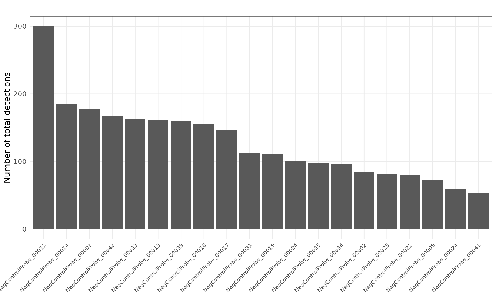
ggplot(probe_coords, aes(x=x, y=y))+
geom_point(size=0.01, color="black")+
theme_bw()+
#facet_wrap(~sample, ncol=1)+
defined_theme+
ggtitle("Spatial coordinates of negative control probes")+
theme(strip.background = element_rect(fill="white", colour="black"),
aspect.ratio = 10/11,
plot.title = element_text(size = 12))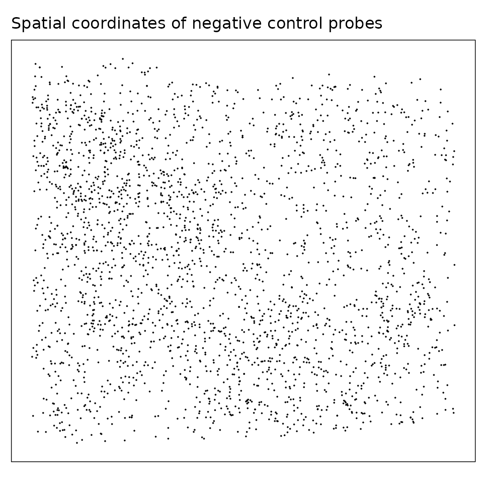
Negative control codewords
Negative control codewords are unused barcode sequences included to detect random or erroneous decoding events, providing a measure of decoding noise. We visualized both the total detection counts per target and their spatial distribution. There are 41 codeword targets used in this dataset, and the median total detection per target is about 53. The spatial distribution of these probes appears random, with no evident localized enrichment.
codeword_coords =hl_cancer$trans_info[hl_cancer$trans_info$feature_name %in% hl_cancer$codeword,
c("x","y","feature_name")]
ordered_feature = codeword_coords %>% group_by(feature_name) %>% count() %>% arrange(desc(n))%>% pull(feature_name)
codeword_tb = as.data.frame(codeword_coords %>% group_by( feature_name) %>% count())
colnames(codeword_tb) = c("feature_name","value_count")
codeword_tb$feature_name = factor(codeword_tb$feature_name, levels= ordered_feature)
codeword_tb = codeword_tb[order(codeword_tb$feature_name), ]
ggplot(codeword_tb, aes(x = feature_name, y = value_count)) +
geom_bar(stat = "identity", position = position_dodge()) +
#facet_wrap(~sample, ncol=1, scales = "free_y")+
labs(title = " ", x = " ", y = "Number of total detections") +
theme_bw()+
theme(legend.position = "none",
axis.text.x= element_text(size=8, angle=45,vjust=1,hjust = 1),
axis.text.y=element_text(size=10),
axis.ticks=element_blank(),
strip.text = element_text(size=12),
axis.title.y = element_text(size=12),
axis.title.x=element_blank(),
strip.background = element_rect(fill="white", colour ="black"),
panel.background=element_blank(),
panel.grid.minor=element_blank(),
plot.background=element_blank())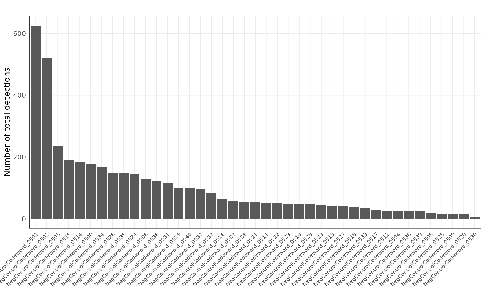
ggplot(codeword_coords, aes(x=x, y=y))+
geom_point(size=0.01, color="black")+
theme_bw()+
#facet_wrap(~sample, ncol=1)+
defined_theme+
ggtitle("Spatial coordinates of negative control codewords")+
theme(strip.background = element_rect(fill="white", colour="black"),
aspect.ratio = 10/11,
plot.title = element_text(size = 12))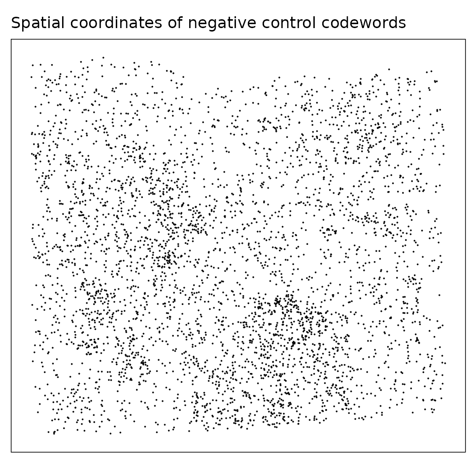
Single cell summary
These summary plots characterise per-cell detection counts and sparsity. We can calculate per-cell and per-gene summary statistics from the counts matrix:
Total detections per cell: sums all transcript counts in each cell.
Proportion of zeroes per cell: fraction of genes not detected in each cell.
Detected genes per cell: number of non-zero genes per cell.
Average expression per gene: mean expression across cells, ignoring zeros.
Each distribution is visualised with histograms and density curves to assess data quality and sparsity.
td_r1 <- colSums(hl_cancer$cm)
pz_r1 <- colMeans(hl_cancer$cm==0)
numgene_r1 <- colSums(hl_cancer$cm!=0)
# Build the entire summary as one string
output <- paste0(
"\n================= Summary Statistics =================\n\n",
"--- Xenium human lung cacner sample ---\n",
make_sc_summary(td_r1, "Total detections per cell:"),
make_sc_summary(pz_r1, "Proportion of zeroes per cell:"),
make_sc_summary(numgene_r1, "Detected genes per cell:"),
"\n========================================================\n"
)
cat(output)
================= Summary Statistics =================
--- Xenium human lung cacner sample ---
Total detections per cell:
Min: 1.0000 | 1Q: 65.0000 | Median: 105.0000 | Mean: 125.2580 | 3Q: 162.0000 | Max: 1649.0000
Proportion of zeroes per cell:
Min: 0.5128 | 1Q: 0.7959 | Median: 0.8418 | Mean: 0.8397 | 3Q: 0.8878 | Max: 0.9974
Detected genes per cell:
Min: 1.0000 | 1Q: 44.0000 | Median: 62.0000 | Mean: 62.8283 | 3Q: 80.0000 | Max: 191.0000
========================================================td_df = as.data.frame(cbind(as.vector(td_r1),
rep("hlung_cancer", length(td_r1))))
colnames(td_df) = c("td","sample")
td_df$td= as.numeric(td_df$td)
p1<-ggplot(data = td_df, aes(x = td, color=sample)) +
geom_histogram(aes(y = after_stat(density)),
binwidth = 50, fill = "gray", color = "black") +
geom_density(color = "steelblue", size = 2) +
labs(title = "Distribution of total detections per cell",
x = " ", y = "Density") +
#xlim(0, 1000) +
theme_minimal() +
theme(plot.title = element_text(hjust = 0.5),
strip.text = element_text(size=12))
pz = as.data.frame(cbind(as.vector(pz_r1),rep("hlung_cancer", length(pz_r1))))
colnames(pz) = c("prop_ze","sample")
pz$prop_ze= as.numeric(pz$prop_ze)
p2<-ggplot(data = pz, aes(x = prop_ze)) +
geom_histogram(aes(y = after_stat(density)),
binwidth = 0.05, fill = "gray", color = "black") +
geom_density(color = "steelblue", size = 2) +
labs(title = "Distribution of proportion of zeroes per cell",
x = " ", y = "Density") +
#xlim(0, 1) +
theme_minimal() +
theme(plot.title = element_text(hjust = 0.5),
strip.text = element_text(size=12))
numgens = as.data.frame(cbind(as.vector(numgene_r1),rep("hlung_cancer", length(numgene_r1))))
colnames(numgens) = c("numgen","sample")
numgens$numgen= as.numeric(numgens$numgen)
p3<-ggplot(data = numgens, aes(x = numgen)) +
geom_histogram(aes(y = after_stat(density)),
binwidth = 10, fill = "gray", color = "black") +
geom_density(color = "steelblue", size = 2) +
#facet_wrap(~sample)+
labs(title = "Distribution of detected genes per cell",
x = " ", y = "Density") +
#xlim(0, 1) +
theme_minimal() +
theme(plot.title = element_text(hjust = 0.5),
strip.text = element_text(size=12))cm_new1=hl_cancer$cm
cm_new1[cm_new1==0] = NA
cm_new1 = as.data.frame(cm_new1)
cm_new1$avg2 = rowMeans(cm_new1,na.rm = TRUE)
summary(cm_new1$avg2) Min. 1st Qu. Median Mean 3rd Qu. Max.
1.01 1.26 1.51 1.68 1.86 5.20 avg_exp = as.data.frame(cbind("avg"=cm_new1$avg2,
"sample"=rep("hlung_cancer", nrow(hl_cancer$cm))))
avg_exp$avg=as.numeric(avg_exp$avg)
p4<-ggplot(data = avg_exp, aes(x = avg, color=sample)) +
geom_histogram(aes(y = after_stat(density)),
binwidth = 0.5, fill = "gray", color = "black") +
geom_density(color = "orange", linewidth = 1) +
labs(title = "Distribution of average gene expression per cell",
x = " ", y = "Density") +
#xlim(0, 1) +
theme_minimal() +
theme(plot.title = element_text(hjust = 0.5),
strip.text = element_text(size=12))
layout_design <- (p1|p2)/(p3|p4)
print(layout_design)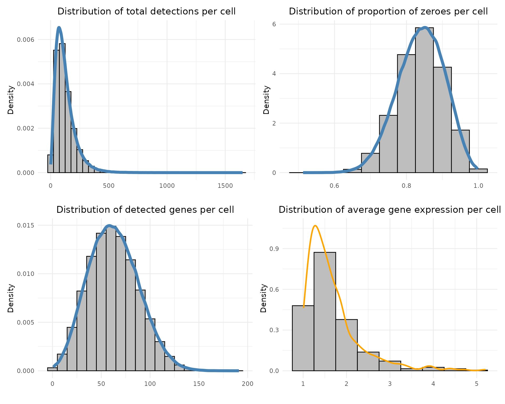
The total detections per cell are low, with a median of ~105 counts and about 62 detected genes per cell on average. As expected for Xenium data, a large fraction of values are zero (median ≈ 0.84), reflecting strong sparsity. The median average gene expression (~1.51) is consistent with the low expression levels typically observed in Xenium datasets.
Refine clustering
We used the clsuter labels from the graph-based clsutering from Xenium platform, and performed manual refinement to merge or reassign certain clusters based on prior annotation decisions. Several smaller or closely related clusters (e.g., 7, 10, 11, 17 into 6; 20, 22 into 15) were combined to simplify the clustering structure. The refined cluster assignments were then matched with each cell’s spatial coordinates (x, y) and stored for marker analysis.
# create seurat object
set.seed(20394)
biorep=factor(rep(c("hlc"),c(ncol(hl_cancer$cm))))
names(biorep) = colnames( hl_cancer$cm)
hlc_seu=CreateSeuratObject(counts = hl_cancer$cm, project = "hlc")
hlc_seu=AddMetaData(object=hlc_seu, metadata = biorep, col.name="biorep")
hlc_seu = NormalizeData(hlc_seu, verbose = FALSE,
normalization.method = "LogNormalize")
hlc_seu = FindVariableFeatures(hlc_seu, selection.method = "vst",
nfeatures = 392, verbose = FALSE)
hlc_seu=ScaleData(hlc_seu, verbose = FALSE)
hlc_seu=RunPCA(hlc_seu, npcs = 30, verbose = FALSE,
features = row.names(hlc_seu))
# print(ElbowPlot(seu, ndims = 50))
hlc_seu <- RunUMAP(object = hlc_seu, dims = 1:20)
# load provided cluster labels
graphclust_off=read.csv(paste(path, "graphclust.csv",sep=""))
graphclust_off$new_cluster = graphclust_off$Cluster
graphclust_off[graphclust_off$Cluster %in% c(7,10,11,17),"new_cluster"] = "6"
graphclust_off[graphclust_off$Cluster==14,"new_cluster"] = "4"
graphclust_off[graphclust_off$Cluster==21,"new_cluster"] = "18"
graphclust_off[graphclust_off$Cluster %in% c(20,22),"new_cluster"] = "15"
graphclust_off[graphclust_off$Cluster %in% c(19,23),"new_cluster"] = "5"
## refined cluster
rep_clusters = as.data.frame(paste("c",graphclust_off$new_cluster, sep=""))
row.names(rep_clusters) = graphclust_off$Barcode
colnames(rep_clusters) = "cluster"
rep_clusters$cluster=factor(rep_clusters$cluster)
cells= hl_cancer$cell_info
row.names(cells) = cells$cell_id
rp_names = row.names(rep_clusters)
rep_clusters[rp_names,"x"] = cells[match(rp_names,row.names(cells)),"x"]
rep_clusters[rp_names,"y"] = cells[match(rp_names,row.names(cells)),"y"]
clusters = rep_clusters
clusters$sample = "hl_cancer"
saveRDS(clusters, here(gdata,paste0(data_nm, "_clusters.Rds")))
saveRDS(hlc_seu, here(gdata,paste0(data_nm, "_seu.Rds")))# load generated data (see code above for how they were created)
cluster_info = readRDS(here(gdata,paste0(data_nm, "_clusters.Rds")))
cluster_info$cell_id = row.names(cluster_info)
clusts <- unique(as.character(cluster_info$cluster))
cluster_names <- clusts[order(as.numeric(sub("c", "", clusts)))]
cluster_info$cluster = factor(cluster_info$cluster,
levels = cluster_names)
seu = readRDS(here(gdata,paste0(data_nm, "_seu.Rds")))
seu <- subset(seu, cells = cluster_info$cell_id)
Idents(seu)=cluster_info$cluster[match(colnames(seu), cluster_info$cell_id)]
seu$sample = cluster_info$sample[match(colnames(seu), cluster_info$cell_id)]
Idents(seu) = factor(Idents(seu), levels = cluster_names)
cluster_info = cluster_info[order(cluster_info$cluster), ]
fig_ratio = cluster_info %>%
group_by(sample) %>%
summarise(
x_range = diff(range(x, na.rm = TRUE)),
y_range = diff(range(y, na.rm = TRUE)),
ratio = y_range / x_range,
.groups = "drop"
) %>% summarise(max_ratio = max(ratio)) %>% pull(max_ratio)ggplot(data = cluster_info,
aes(x = x, y = y, color=cluster))+
geom_point(size=0.0001)+
facet_wrap(~sample)+
theme_classic()+
guides(color=guide_legend(title="", nrow = 2,
override.aes=list(alpha=1, size=6)))+
defined_theme+
theme(aspect.ratio = fig_ratio,
legend.text = element_text(size=12),
legend.position = "bottom",
strip.text = element_blank())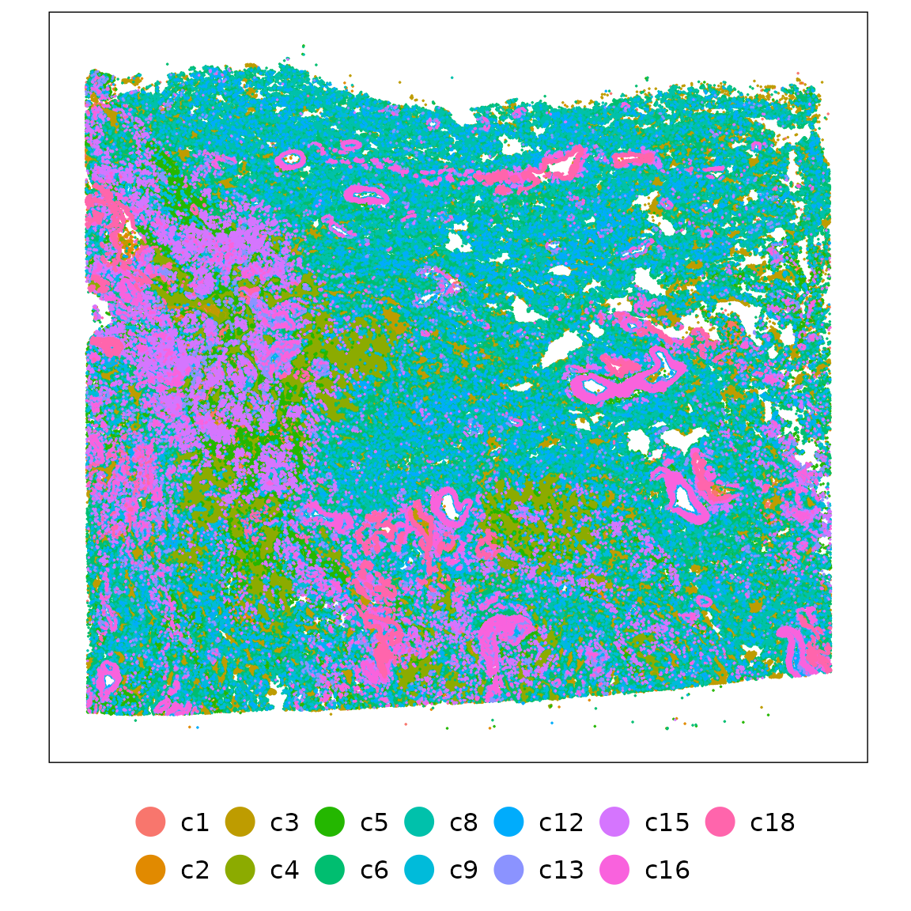
ggplot(data = cluster_info,
aes(x = x, y = y))+
geom_hex(bins = 100)+
facet_wrap(~cluster, nrow=3)+
scale_fill_gradient(low="white", high="maroon4") +
theme_classic()+
guides(color=guide_legend(title="",
override.aes=list(alpha=1, size=8)))+
defined_theme+
theme(legend.position = "right",
aspect.ratio = fig_ratio,
strip.text = element_text(size=12))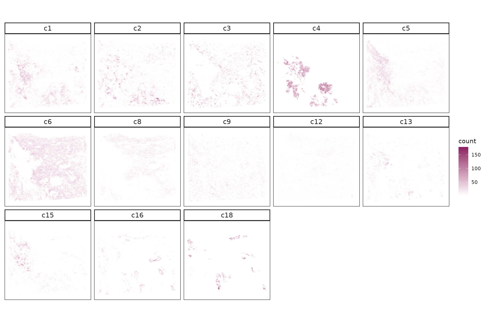
We can see that cluster sizes vary considerably, with c6 being the dominant population in the dataset. Clusters c1–c5 form a second major group, each containing around 50,000–57,000 cells, while smaller clusters such as c12, c13, c16, and c18 contain fewer than 20,000 cells.
sum_df <- as.data.frame(table(cluster_info$cluster))
colnames(sum_df) = c("cellType","n")
ggplot(sum_df, aes(x = cellType, y = n, fill=n)) +
geom_bar(stat = "identity", position="stack", fill="black") +
geom_text(aes(label = n),size=3,
position = position_dodge(width = 0.9), vjust = -0.5) +
scale_y_continuous(expand = c(0,1), limits=c(0,130000))+
labs(title = " ", x = " ", y = "number of cells", fill="cell type") +
theme_bw()+
theme(legend.position = "none",
axis.text= element_text(size=15,vjust=0.5,hjust = 0.5),
strip.text = element_text(size = rel(1)),
axis.line=element_blank(),
axis.text.y=element_blank(),axis.ticks=element_blank(),
axis.title=element_text(size=12),
panel.background=element_blank(),
panel.grid.major=element_blank(),
panel.grid.minor=element_blank(),
plot.background=element_blank())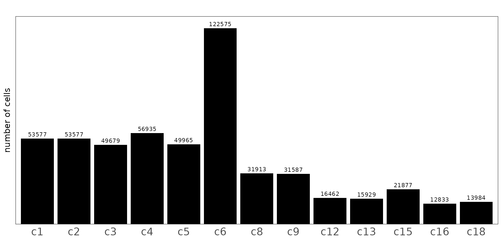
Detect marker genes
jazzPanda
We applied jazzPanda to this dataset using both the linear modelling and correlation-based approaches to detect spatially enriched marker genes across clusters.
Linear modelling approach
We first used the linear modelling approach to identify spatially enriched marker genes. The dataset was converted into spatial gene and cluster vectors using a 70 × 70 square binning strategy. Transcript detections for the negative control probes and codewords targets were included as the background control. For each gene, a linear model was fitted to estimate its spatial association with relevant cell type patterns.
cluster_info$sample = "hl_cancer"
all_genes = row.names(hl_cancer$cm)
grid_length=70
hliver_vector_lst = get_vectors(x=list("hl_cancer" = hl_cancer$trans_info),
sample_names="hl_cancer",
cluster_info = cluster_info,bin_type="square",
test_genes = all_genes,
bin_param=c(grid_length,grid_length),
n_cores = 5)
rep1_bc_vectors = create_genesets(x=list("hl_cancer" = hl_cancer$trans_info),
sample_names="hl_cancer",
name_lst=list(probe = hl_cancer$probe,
codeword = hl_cancer$codeword),
bin_type="square",
bin_param=c(70, 70),
cluster_info=NULL)
set.seed(seed_number)
jazzPanda_res_lst= lasso_markers(gene_mt=rep1_sq70_vectors$gene_mt,
cluster_mt = rep1_sq70_vectors$cluster_mt,
sample_names=c("hl_cancer"),
keep_positive=TRUE,
background=rep1_bc_vectors,
n_fold = 10)
saveRDS(hliver_vector_lst, here(gdata,paste0(data_nm, "_sq70_vector_lst.Rds")))
saveRDS(jazzPanda_res_lst, here(gdata,paste0(data_nm, "_jazzPanda_res_lst.Rds")))# load from saved objects
jazzPanda_res_lst = readRDS(here(gdata,paste0(data_nm, "_jazzPanda_res_lst.Rds")))
sv_lst = readRDS(here(gdata,paste0(data_nm, "_sq70_vector_lst.Rds")))
nbins = 4900
jazzPanda_res = get_top_mg(jazzPanda_res_lst, coef_cutoff=0.1) The follwoing dotplot shows the top five marker genes per cluster identified by the jazzPanda–glm model. Marker genes for clusters including c4, c15, c16 and c18 display distinct expression patterns. In contrast, some clusters (e.g., c12, c13) exhibit weaker or more diffuse signals, indicating less distinct transcriptional signatures.
glm_mg = jazzPanda_res[jazzPanda_res$top_cluster != "NoSig", ]
glm_mg$top_cluster = factor(glm_mg$top_cluster, levels = cluster_names)
top_mg_glm <- glm_mg %>%
group_by(top_cluster) %>%
arrange(desc(glm_coef), .by_group = TRUE) %>%
slice_max(order_by = glm_coef, n = 5) %>%
select(top_cluster, gene, glm_coef)
p1<-DotPlot(seu, features = top_mg_glm$gene) +
scale_colour_gradient(low = "white", high = "red") +
coord_flip()+
theme(axis.text.x = element_text(angle = 45, hjust = 1, vjust = 1))+
labs(title = "Top 5 marker genes (jazzPanda-glm)", x="", y="")
p1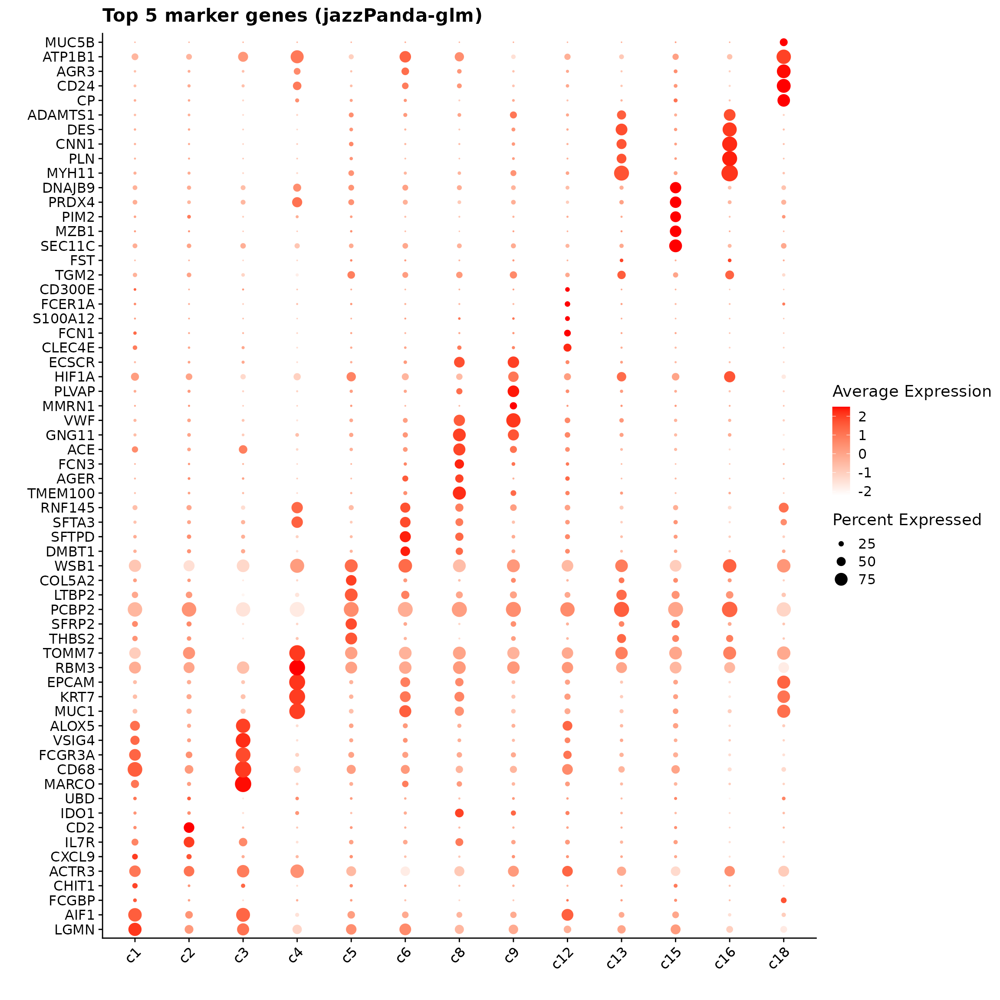
Cluster to cluster correlation
We computed pairwise Pearson correlations between spatial cluster vectors to assess relationships among cell type distributions. The resulting heatmap shows generally low to moderate correlations, indicating that most clusters occupy distinct spatial domains. A few moderate positive correlations are observed — between c1 and c2 (r = 0.56) and c6 and c8 (r = 0.61) — suggesting partial spatial overlap or related expression patterns in these pairs. In contrast, several clusters show negative correlations (e.g., c4–c6, c5–c8), reflecting mutually exclusive spatial organization.
cluster_mtt = sv_lst$cluster_mt
cluster_mtt = cluster_mtt[,cluster_names]
cor_M_cluster = cor(cluster_mtt,cluster_mtt,method = "pearson")
col <- colorRampPalette(c("#4477AA", "#77AADD", "#FFFFFF","#EE9988", "#BB4444"))
corrplot(
cor_M_cluster,
method = "color",
col = col(200),
diag = TRUE,
addCoef.col = "black",
type = "upper",
tl.col = "black",
tl.cex = 0.9,
number.cex = 0.8,
tl.srt = 45,
mar = c(0, 0, 3, 0),
sig.level = 0.05,
insig = "blank",
title = "cluster–cluster correlation",
cex.main = 1.2
)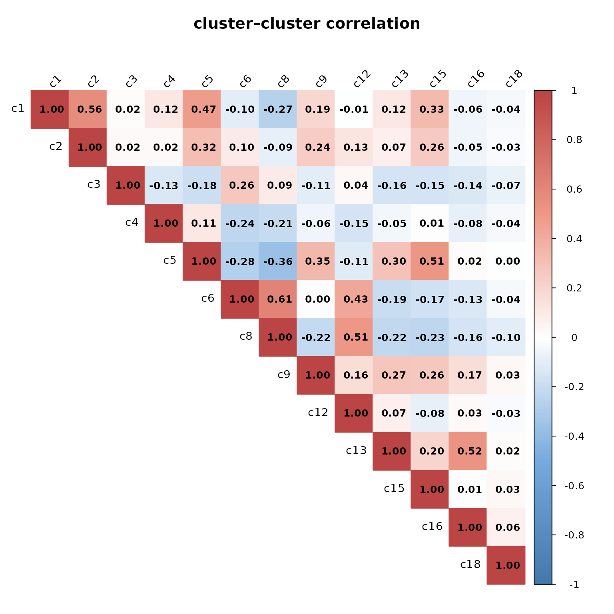
Top3 marker genes by jazzPanda_glm
We visualized the top three marker genes identified by the linear modelling approach for each cluster. For each selected gene, its spatial transcript locations were plotted alongside the corresponding cluster map. Across clusters, the spatial expression patterns of marker genes closely match the distribution of their associated cell types
for (cl in cluster_names){
#ct_nm = anno_df[anno_df$cluster==cl, "anno_name"]
inters=jazzPanda_res[jazzPanda_res$top_cluster==cl,"gene"]
rounded_val=signif(as.numeric(jazzPanda_res[inters,"glm_coef"]),
digits = 3)
inters_df = as.data.frame(cbind(gene=inters, value=rounded_val))
inters_df$value = as.numeric(inters_df$value)
inters_df=inters_df[order(inters_df$value, decreasing = TRUE),]
inters_df$text= paste(inters_df$gene,inters_df$value,sep=": ")
if (length(inters > 0)){
inters_df = inters_df[1:min(3, nrow(inters_df)),]
inters = inters_df$gene
iters_sp1= hl_cancer$trans_info$feature_name %in% inters
vis_r1 =hl_cancer$trans_info[iters_sp1,
c("x","y","feature_name")]
vis_r1$value = inters_df[match(vis_r1$feature_name,inters_df$gene),
"value"]
vis_r1=vis_r1[order(vis_r1$value,decreasing = TRUE),]
vis_r1$text_label= paste(vis_r1$feature_name,
vis_r1$value,sep=": ")
vis_r1$text_label=factor(vis_r1$text_label, levels=inters_df$text)
vis_r1 = vis_r1[order(vis_r1$text_label),]
genes_plt <- plot_top3_genes(vis_df=vis_r1, fig_ratio=fig_ratio)
cluster_data = cluster_info[cluster_info$cluster==cl, ]
cl_pt<- ggplot(data =cluster_data,
aes(x = x, y = y, color=sample))+
geom_point(size=0.01)+
facet_wrap(~cluster, nrow=1,strip.position = "left")+
scale_color_manual(values = c("black"))+
defined_theme + theme(legend.position = "none",
strip.background = element_blank(),
legend.key.width = unit(15, "cm"),
aspect.ratio = fig_ratio,
plot.margin = margin(0, 0, 0, 0),
strip.text = element_text(size = rel(1.3)))
layout_design <- (wrap_plots(cl_pt, ncol = 1) | genes_plt) +
plot_layout(widths = c(1, 3), heights = c(1))
print(layout_design)
}
}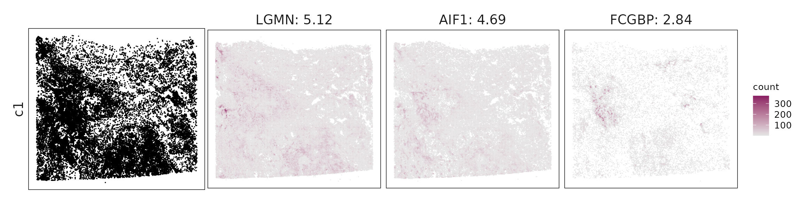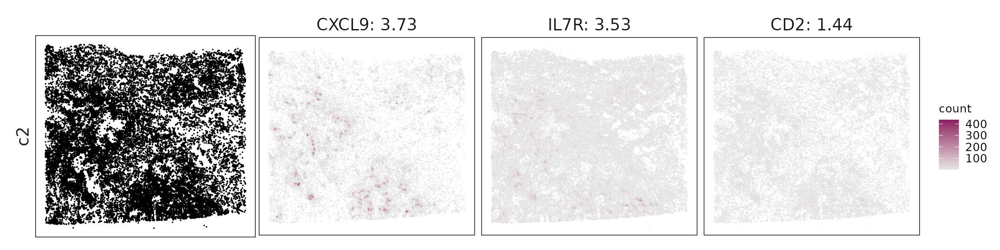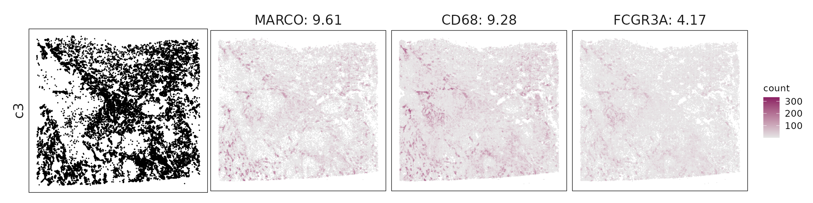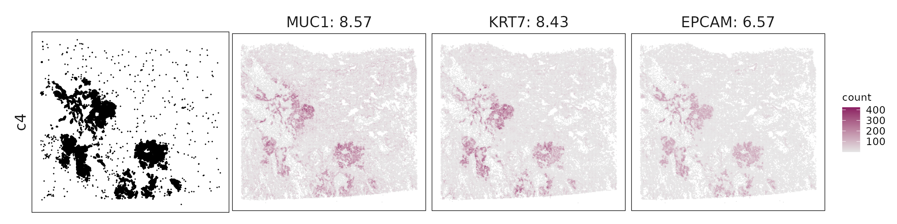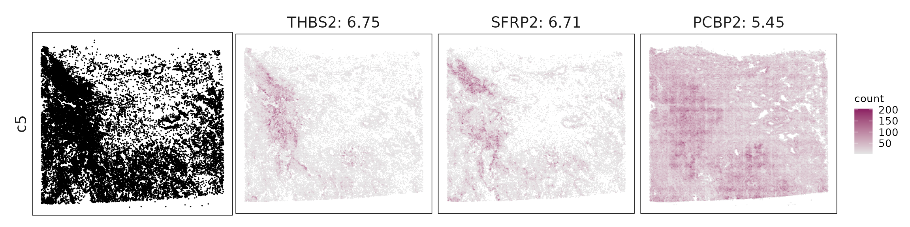 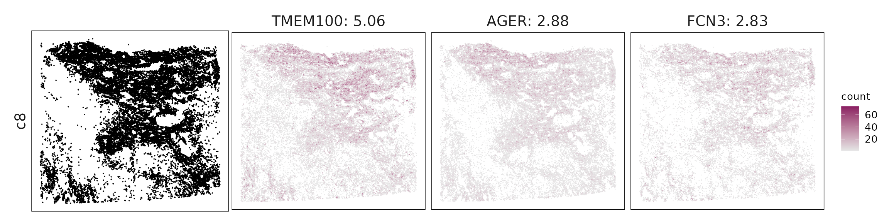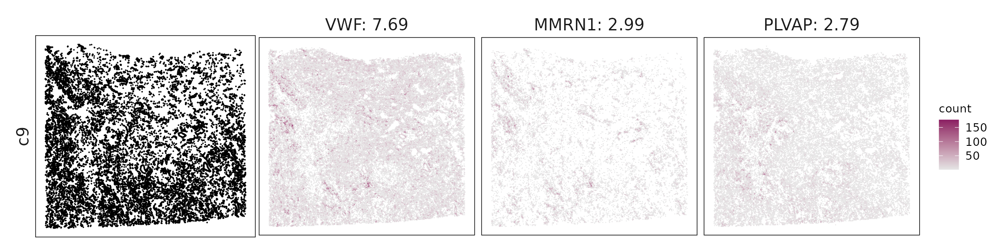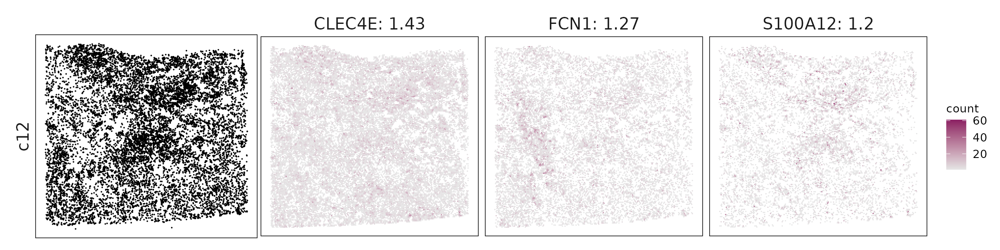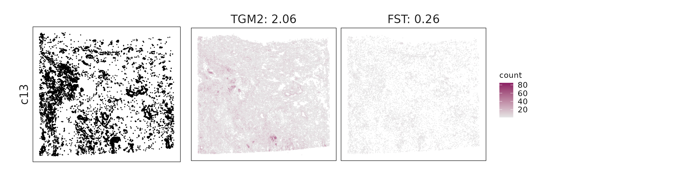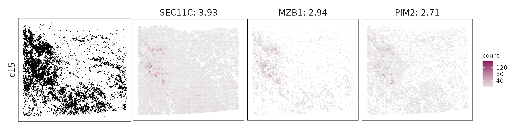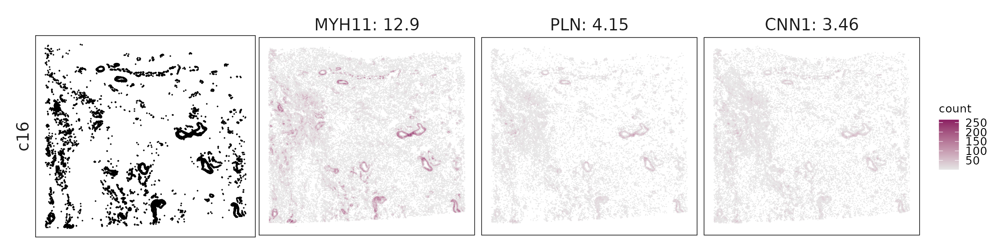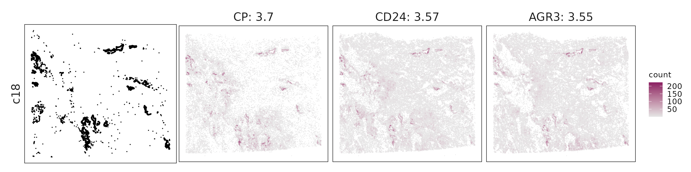
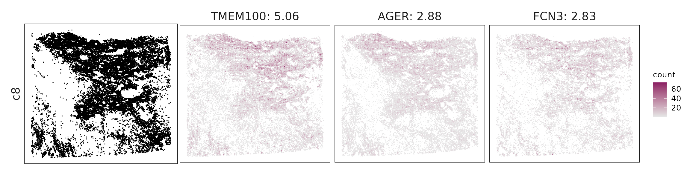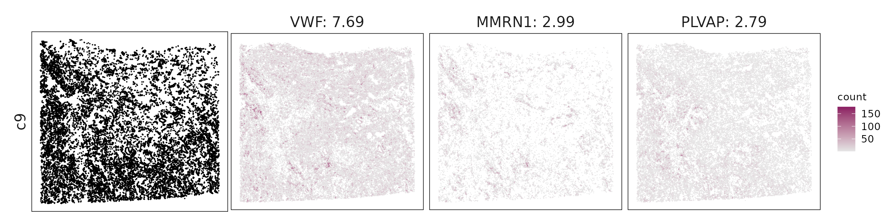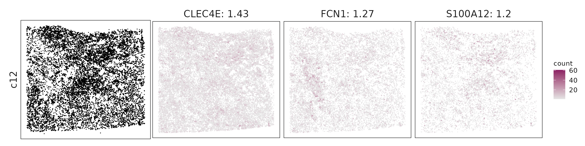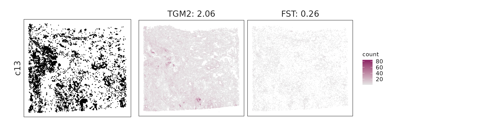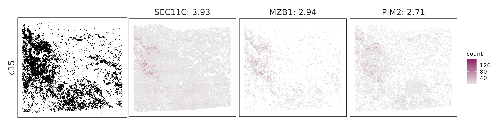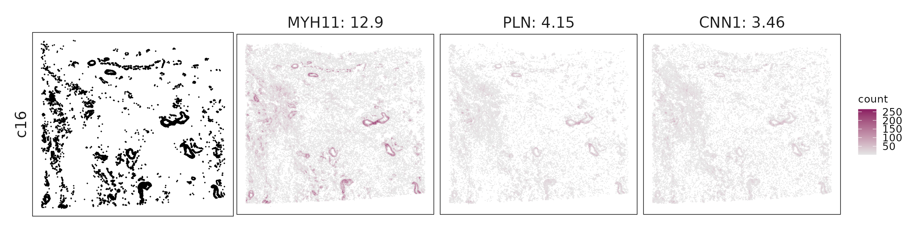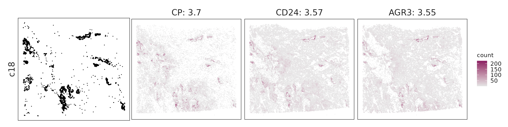
Cluster vector versus marker gene vector
We visualized the top three marker genes (linear modelling approach) for each cluster by plotting their spatial gene vectors against the corresponding cluster vector. Each scatter plot shows how strongly each marker gene’s spatial pattern aligns with the overall spatial signal of its cluster, allowing assessment of both marker specificity and coherence with spatial domains.
plot_lst=list()
for (cl in cluster_names){
# ct_nm = anno_df[anno_df$cluster==cl, "anno_name"]
inters_df=jazzPanda_res[jazzPanda_res$top_cluster==cl,]
if (nrow(inters_df) >0){
inters_df=inters_df[order(inters_df$glm_coef, decreasing = TRUE),]
inters_df = inters_df[1:min(3, nrow(inters_df)),]
mk_genes = inters_df$gene
dff = as.data.frame(cbind(sv_lst$cluster_mt[,cl],
sv_lst$gene_mt[,mk_genes]))
colnames(dff) = c("cluster", mk_genes)
dff$vector_id = c(1:nbins)
long_df <- dff %>%
tidyr::pivot_longer(cols = -c(cluster, vector_id), names_to = "gene",
values_to = "vector_count")
long_df$gene = factor(long_df$gene, levels=mk_genes)
p<-ggplot(long_df, aes(x = cluster, y = vector_count, color=gene )) +
geom_point(size=0.01) +
facet_wrap(~gene, scales="free_y", nrow=1) +
labs(x = paste(cl," cluster vector ", sep=""),
y = "Top3 marker gene vector") +
theme_minimal()+
scale_y_continuous(expand = c(0.01,0.01))+
scale_x_continuous(expand = c(0.01,0.01))+
theme(panel.grid = element_blank(),legend.position = "none",
strip.text = element_text(size = 12),
axis.line=element_blank(),
axis.text=element_text(size = 10),
axis.ticks=element_line(color="black"),
axis.title.x=element_text(size = 13),
axis.title.y=element_text(size = 10),
panel.border =element_rect(colour = "black",
fill=NA, linewidth=0.5)
)
if (length(mk_genes) == 2) {
p <- (p | plot_spacer()) +
plot_layout(widths = c(2, 1))
} else if (length(mk_genes) == 1) {
p <- (p | plot_spacer() | plot_spacer()) +
plot_layout(widths = c(1, 1, 1))
}
plot_lst[[cl]] = p
}
}
combined_plot <- wrap_plots(plot_lst, ncol = 2)
combined_plot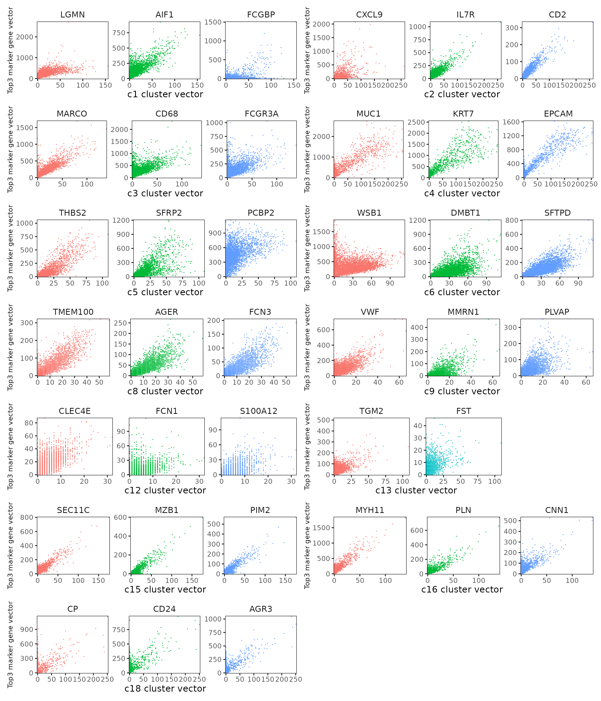
Marker gene summary per cluster
For each cluster, we summarized the detected marker genes and their corresponding strengths. We list genes with model coefficients above the defined cutoff (e.g. 0.1) for each cluster.
c1 – IFN-activated macrophages (CXCL9/10⁺, MMP-high) Markers (LGMN, AIF1, CXCL10, MMP9, CD14) define inflammatory macrophages with IFN response and matrix-remodeling activity, consistent with activated TAMs.
c2 – Activated/exhausted T cells T cell genes (CD3E, GZMA, GZMK, CXCL13, LAG3, CTLA4) indicate activated or exhausted T cells, likely cytotoxic and helper subsets in chronically stimulated tumor regions.
c3 – MARCO⁺ immunoregulatory macrophages MARCO, CD68, FCGR3A, CD163 mark resident or immunosuppressive TAMs, aligning with an alveolar macrophage–like phenotype.
c4 – Proliferating tumor epithelium High EPCAM, KRT7, MUC1, EGFR, MET, and proliferation genes (TOP2A, MKI67) define tumor epithelial cells with active growth and signaling.
c5 – Matrix CAFs SFRP2, THBS2, LTBP2, COL5A2, FBN1 identify fibroblasts/CAFs producing extracellular matrix and participating in stromal remodeling.
c6 – Secretory airway epithelium SFTPD, SFTA3, CFTR, DMBT1 indicate club or serous secretory cells, typical of airway epithelial differentiation.
c8 – Capillary/arterial endothelium TMEM100, AGER, ACE, CLDN5 define alveolar–capillary endothelial cells, reflecting vascular identity within gas-exchanging regions.
c9 – Venous/activated endothelium VWF, PLVAP, ACKR1, LYVE1 mark venous or inflamed endothelial cells, consistent with tumor-associated vasculature.
c12 – Dendritic/monocyte mix Clec4E, FCN1, S100A12, CD1C suggest cDC2 and inflammatory monocytes, mediating antigen presentation and innate activation.
c13 – Mural/pericyte-like stromal cells TGM2, FST fit perivascular or mural stromal cells with ECM and TGF-β–related activity.
c15 – Plasma cells MZB1, CD79A, TNFRSF17 (BCMA), PRDX4 define plasma cells undergoing active antibody production.
c16 – Smooth muscle cells MYH11, CNN1, DES, LMOD1 clearly mark vascular smooth muscle with contractile function.
c18 – Basal–ciliated transitional epithelium KRT5, TP73, FOXJ1, MUC5B, AGR3 indicate basal–secretory–ciliated transitional cells, reflecting airway differentiation or metaplasia.
## linear modelling
output_data <- do.call(rbind, lapply(cluster_names, function(cl) {
subset <- jazzPanda_res[jazzPanda_res$top_cluster == cl, ]
sorted_subset <- subset[order(-subset$glm_coef), ]
if (length(sorted_subset) == 0){
return(data.frame(Cluster = cl, Genes = " "))
}
if (cl != "NoSig"){
gene_list <- paste(sorted_subset$gene, "(", round(sorted_subset$glm_coef, 2), ")", sep="", collapse=", ")
}else{
gene_list <- paste(sorted_subset$gene, "", sep="", collapse=", ")
}
return(data.frame(Cluster = cl, Genes = gene_list))
}))
knitr::kable(
output_data,
caption = "Detected marker genes for each cluster by linear modelling approach in jazzPanda, in decreasing value of glm coefficients"
)| Cluster | Genes |
|---|---|
| c1 | LGMN(5.12), AIF1(4.69), FCGBP(2.84), CHIT1(2.75), ACTR3(2.7), CTSA(2.22), MS4A4A(2.1), CD4(2.1), IGSF6(1.99), CXCL10(1.71), CD14(1.7), GPR183(1.62), SLC1A3(1.33), S100B(1.27), FCGR1A(1.25), PLA2G7(1.22), SLC16A3(1.19), IRF8(0.98), HNMT(0.89), ITGAM(0.89), CD86(0.87), SYK(0.86), MPEG1(0.81), HAVCR2(0.79), GPSM3(0.72), MMP12(0.59), LILRB4(0.51), MMP9(0.48), GPR34(0.48), PTGS1(0.48), CLEC10A(0.42), TREM2(0.41), HPGDS(0.39), CD40(0.34), CD28(0.34), LILRB2(0.26), PDCD1LG2(0.23), IQGAP2(0.21) |
| c2 | CXCL9(3.73), IL7R(3.53), CD2(1.44), IDO1(1.4), UBD(1.26), KLRB1(1.14), CXCL13(1.02), CD3E(0.92), CTLA4(0.84), CD8A(0.83), GZMK(0.77), CCR7(0.71), IRF1(0.61), GPR171(0.6), GZMA(0.56), CD3D(0.53), STAT4(0.52), RUNX3(0.38), FSCN1(0.38), KLRD1(0.38), FCMR(0.37), GZMB(0.36), CXCL14(0.33), FDCSP(0.31), CD247(0.3), SELL(0.29), LCK(0.28), CXCR6(0.25), FOXP3(0.2), MS4A1(0.19), CD40LG(0.17), LAG3(0.14), SAMD3(0.13) |
| c3 | MARCO(9.61), CD68(9.28), FCGR3A(4.17), VSIG4(3.65), ALOX5(3.37), CD163(3.29), CTSL(3.19), MCEMP1(3.03), GRINA(1.97), LAMP2(1.93), ADGRE5(1.84), ANPEP(1.62), HEXA(1.55), SNX2(1.36), GLIPR2(1.19), CXCL5(1.14), CSTA(1.02), CLEC12A(0.95), CXCL3(0.94), NCEH1(0.88), PCOLCE2(0.79), AQP9(0.75), ADAM17(0.6), CD83(0.53), FABP3(0.47), MIS18BP1(0.42), RBP4(0.37), LYAR(0.25), CD80(0.2), RETN(0.14) |
| c4 | MUC1(8.57), KRT7(8.43), EPCAM(6.57), RBM3(6.08), TOMM7(5.6), EIF3E(5.57), MET(4.84), HNRNPC(4.45), TACSTD2(4.01), CNBP(3.64), ARF1(3.29), GPI(3.05), CDH1(3), ANAPC16(2.99), BAIAP2L1(2.81), AREG(2.66), OST4(2.22), IGFBP3(2.02), SSR2(1.91), UBE2D3(1.87), UBE2C(1.73), SEC61G(1.73), EGFR(1.66), SLC2A1(1.58), NDUFB4(1.57), EIF3H(1.55), SCEL(1.5), SRSF2(1.49), CHI3L1(1.48), TOMM5(1.45), CTTN(1.44), MYO6(1.36), SCD(1.31), SSR3(1.27), COMMD6(1.19), UXT(1.13), PSMA1(1.08), RBM8A(1.07), F3(1.07), C19orf53(1.06), EIF3A(1), MANF(0.94), TOP2A(0.93), SUMO3(0.91), KLF5(0.91), LAMTOR4(0.78), REEP5(0.77), SRSF7(0.76), TRPC6(0.68), CENPF(0.68), PCNA(0.64), TMEM258(0.64), CDK1(0.61), MKI67(0.57), TRMT112(0.57), KDR(0.56), SEMA3B(0.41), ICA1(0.41), MYC(0.39), NFKB1(0.38), CCNB2(0.38), MAP7(0.38), TMEM106C(0.37), FAS(0.35), S100A1(0.34), WDR83OS(0.33), RAD23A(0.32), SLC12A2(0.27), OTUD7B(0.24), SF3B5(0.23), ETV5(0.23), NDUFA1(0.23), CCNA1(0.18), SOX9(0.13), HMGCS1(0.12), DCLK1(0.11), SPDEF(0.11), CD274(0.11), BANK1(0.1) |
| c5 | THBS2(6.75), SFRP2(6.71), PCBP2(5.45), LTBP2(4.35), COL5A2(3.64), CTSK(3.61), COL8A1(3.57), FBN1(2.82), THY1(2.35), ALDH1A3(1.61), ENAH(1.59), IGF1(1.48), PDPN(1.47), NID1(1.39), SVEP1(0.95), PLA2G2A(0.81), PIM1(0.69), MEDAG(0.67), WNT2(0.67), PDGFRA(0.67), PDGFRB(0.5), VKORC1(0.43), PAMR1(0.38), KIT(0.22) |
| c6 | WSB1(4.71), DMBT1(4.3), SFTPD(3.93), SFTA3(2.97), RNF145(1.89), MALL(1.49), HSD17B11(1.45), C16orf89(1.41), ISCU(1.36), TMPRSS2(1.29), STEAP4(1.14), SLIT3(1.06), PRG4(0.88), MTUS1(0.83), LGALS3BP(0.72), FASN(0.61), GKN2(0.57), PEBP4(0.53), CFTR(0.5), DUOX1(0.46), AK1(0.43), HP(0.41), PLA2G4F(0.35), NTN4(0.33), SFTA2(0.2), DAPK2(0.16) |
| c8 | TMEM100(5.06), AGER(2.88), FCN3(2.83), ACE(2.81), GNG11(2.75), SHANK3(1.49), CA4(1.35), CD34(1.25), NDRG2(1.1), IL1RL1(0.89), RAMP2(0.62), FGFR4(0.61), KCNK3(0.59), LAMC3(0.55), WFS1(0.44), CLDN5(0.39), UPK3B(0.38), STC1(0.32), FGFBP2(0.24), HIGD1B(0.1) |
| c9 | VWF(7.69), MMRN1(2.99), PLVAP(2.79), HIF1A(2.04), ECSCR(2.02), LYVE1(1.88), APOLD1(1.69), ACKR1(1.59), SELP(1.48), ADGRL4(1.42), RGS5(1.14), GJA5(0.72), TM4SF18(0.45), PROX1(0.28), BMX(0.14) |
| c12 | CLEC4E(1.43), FCN1(1.27), S100A12(1.2), FCER1A(1.04), CD300E(0.47), CD1C(0.42) |
| c13 | TGM2(2.06), FST(0.26) |
| c15 | SEC11C(3.93), MZB1(2.94), PIM2(2.71), PRDX4(2.31), DNAJB9(2.11), POU2AF1(1.69), SEC62(1.61), CD79A(1.61), FKBP11(1.22), GLCCI1(1.11), TNFRSF17(0.72), CD27(0.63), CD38(0.45), P2RX1(0.36), CD19(0.19), TNFRSF13C(0.18) |
| c16 | MYH11(12.88), PLN(4.15), CNN1(3.46), DES(3.44), ADAMTS1(1.6), LMOD1(1.32), NTRK2(0.69), DGKG(0.49), LGR6(0.41), CSPG4(0.38), RERGL(0.2) |
| c18 | CP(3.7), CD24(3.57), AGR3(3.55), ATP1B1(3.17), MUC5B(3.01), TMC5(2.77), SERP1(2.32), EPHX1(2.24), PAPOLA(1.8), TMEM123(1.73), ANKRD36C(1.64), CMTM6(1.46), MPC2(1.43), FOXJ1(1.35), CCDC78(1.25), LTF(1.23), APOD(1.18), CFB(1.18), EHF(1.17), RARRES1(1.15), AKR1C1(1.11), MMP7(1.05), TC2N(0.96), TMEM45A(0.8), TMEM219(0.79), SEMA3C(0.79), NCOA7(0.76), ITGB4(0.74), KRT17(0.66), KRT5(0.61), SERPINA3(0.58), TSPAN8(0.58), SMDT1(0.54), ELF3(0.5), TP73(0.49), FAM3D(0.46), FAM184A(0.45), RUVBL2(0.41), CXCL6(0.4), SOX2(0.37), MED24(0.31), ADAM28(0.24), KLK11(0.23), BCAS1(0.22), KRT15(0.19), SLC15A2(0.19), CYP2F1(0.16), LGR5(0.13), GPX2(0.11) |
Correlation approach
We next applied the correlation-based method using the same 70 × 70 binning strategy. This approach highlights genes whose spatial patterns are highly correlated with specific cell type domains.
seed_number=589
grid_length=70
set.seed(seed_number)
perm_p = compute_permp(x=list("hl_cancer" = hl_cancer$trans_info),
cluster_info=clusters,
perm.size=5000,
bin_type="square",
bin_param=c(grid_length,grid_length),
test_genes=row.names(hl_cancer$cm),
correlation_method = "spearman",
n_cores=5,
correction_method="BH")
saveRDS(perm_p, here(gdata,paste0(data_nm, "_perm_lst.Rds")))# load from saved objects
perm_lst = readRDS(here(gdata,paste0(data_nm, "_perm_lst.Rds")))
perm_res = get_perm_adjp(perm_lst)
obs_corr = get_cor(perm_lst)The following dotplot shows top 5 marker genes for each cluster with the correelation approach. Distinct marker patterns are visible for several groups — for example, strong fibroblast markers in c5, endothelial genes in c8–c9, smooth muscle genes in c13–c16, and epithelial genes in c18 — while some immune-related clusters (e.g., c1–c3) show overlapping expression, reflecting broader or mixed signature.
top_mg_corr <- data.frame(cluster = character(),
gene = character(),
corr = numeric(),
stringsAsFactors = FALSE)
for (cl in cluster_names) {
obs_cutoff <- quantile(obs_corr[, cl], 0.75, na.rm = TRUE)
perm_cl <- intersect(
rownames(perm_res[perm_res[, cl] < 0.05, ]),
rownames(obs_corr[obs_corr[, cl] > obs_cutoff, ])
)
if (length(perm_cl) > 0) {
selected_rows <- obs_corr[perm_cl, , drop = FALSE]
ord <- order(selected_rows[, cl], decreasing = TRUE,
na.last = NA)
top_genes <- head(rownames(selected_rows)[ord], 5)
top_vals <- head(selected_rows[ord, cl], 5)
top_mg_corr <- rbind(
top_mg_corr,
data.frame(cluster = rep(cl, length(top_genes)),
gene = top_genes,
corr = top_vals,
stringsAsFactors = FALSE)
)
}
}
p1<-DotPlot(seu, features = unique(top_mg_corr$gene)) +
scale_colour_gradient(low = "white", high = "red") +
coord_flip()+
theme(axis.text.x = element_text(angle = 45, hjust = 1, vjust = 1))+
labs(title = "Top 5 marker genes (jazzPanda-correlation)",
x="", y="")
p1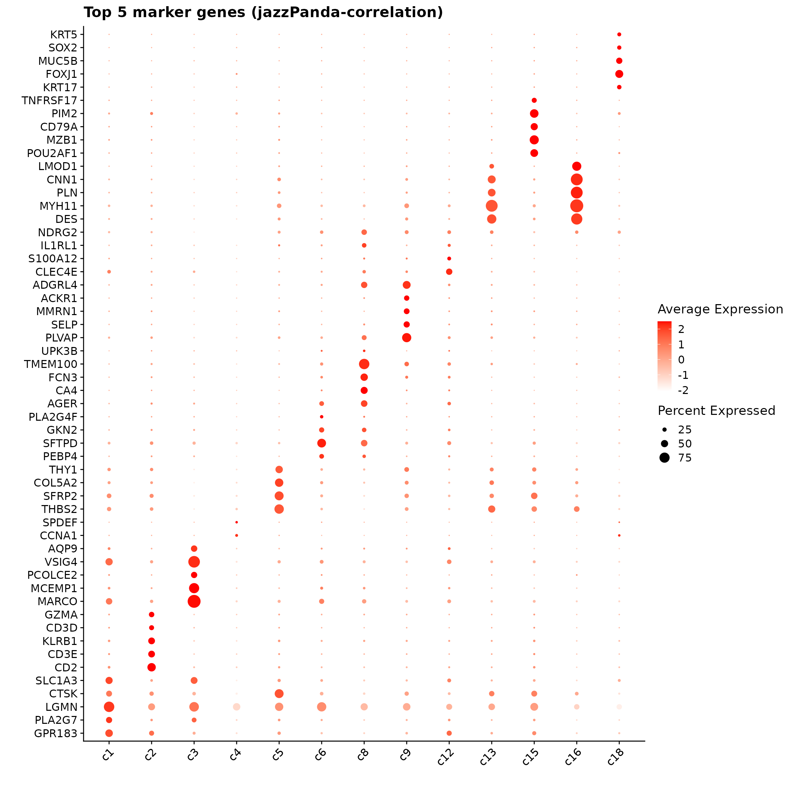
Top3 marker genes by jazzPanda_correlation
For each cluster, the top three genes with the highest significant correlations were visualized alongside the spatial cluster map.
The spatial expression patterns of these marker genes closely align with the distribution of their associated clusters, confirming that the correlation approach captures coherent spatial co-localization between genes and cell-type domains.
for (cl in cluster_names){
#ct_nm = anno_df[anno_df$cluster==cl, "anno_name"]
obs_cutoff = quantile(obs_corr[, cl], 0.75)
perm_cl<-intersect(row.names(perm_res[perm_res[,cl]<0.05,]),
row.names(obs_corr[obs_corr[, cl]>obs_cutoff,]))
inters<-perm_cl
if (length(inters > 0)){
rounded_val<-signif(as.numeric(obs_corr[inters,cl]), digits = 3)
inters_df = as.data.frame(cbind(gene=inters, value=rounded_val))
inters_df$value = as.numeric(inters_df$value)
inters_df<-inters_df[order(inters_df$value, decreasing = TRUE),]
inters_df$text= paste(inters_df$gene,inters_df$value,sep=": ")
inters_df = inters_df[1:min(3, nrow(inters_df)),]
inters = inters_df$gene
iters_sp1= hl_cancer$trans_info$feature_name %in% inters
vis_r1 =hl_cancer$trans_info[iters_sp1,
c("x","y","feature_name")]
vis_r1$value = inters_df[match(vis_r1$feature_name,inters_df$gene),
"value"]
vis_r1=vis_r1[order(vis_r1$value,decreasing = TRUE),]
vis_r1$text_label= paste(vis_r1$feature_name,
vis_r1$value,sep=": ")
vis_r1$text_label=factor(vis_r1$text_label, levels=inters_df$text)
vis_r1 = vis_r1[order(vis_r1$text_label),]
genes_plt <- plot_top3_genes(vis_df=vis_r1, fig_ratio=fig_ratio)
cluster_data = cluster_info[cluster_info$cluster==cl, ]
cl_pt<- ggplot(data =cluster_data,
aes(x = x, y = y, color=sample))+
geom_point(size=0.01)+
facet_wrap(~cluster, nrow=1,strip.position = "left")+
scale_color_manual(values = c("black"))+
defined_theme + theme(legend.position = "none",
strip.background = element_blank(),
legend.key.width = unit(15, "cm"),
aspect.ratio = fig_ratio,
plot.margin = margin(0, 0, 0, 0),
strip.text = element_text(size = rel(1.3)))
layout_design <- (wrap_plots(cl_pt, ncol = 1) | genes_plt) +
plot_layout(widths = c(1, 3), heights = c(1))
print(layout_design)
}
}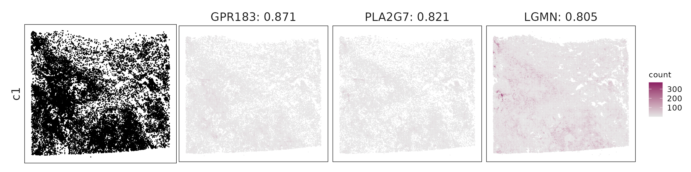 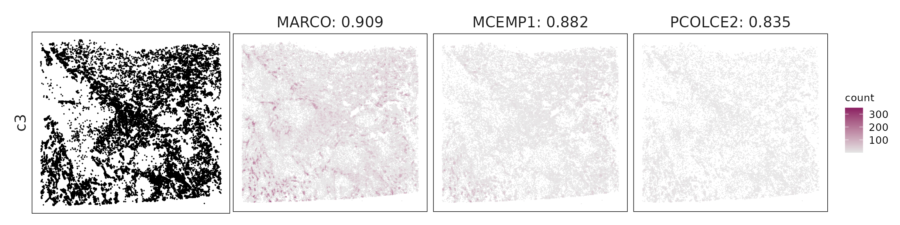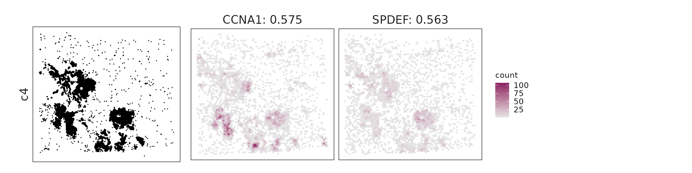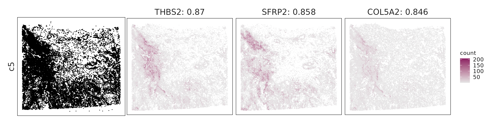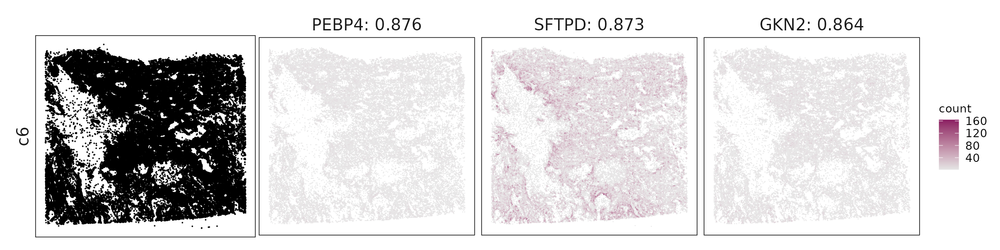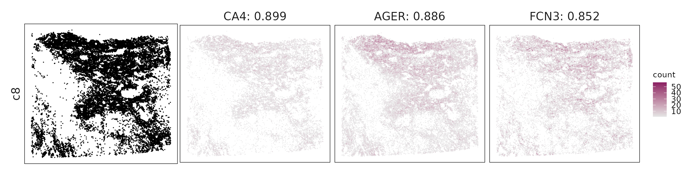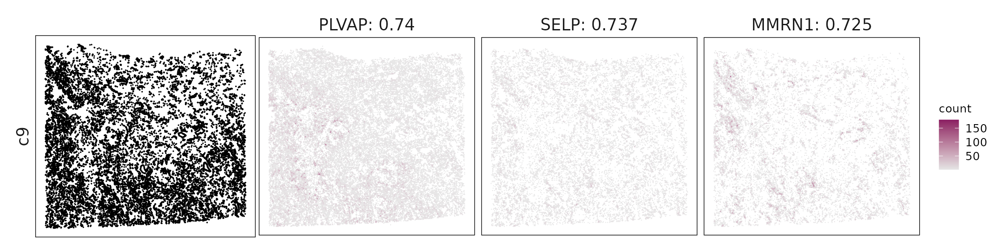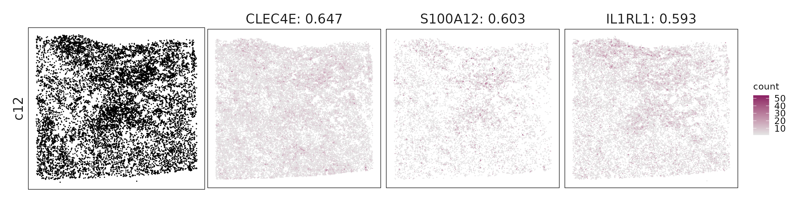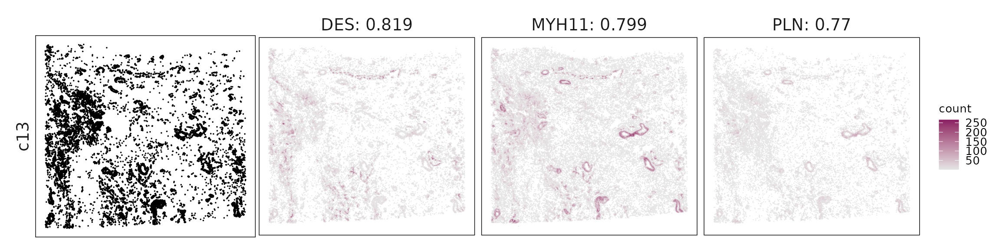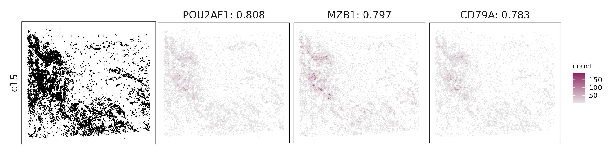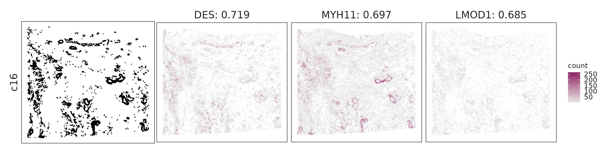
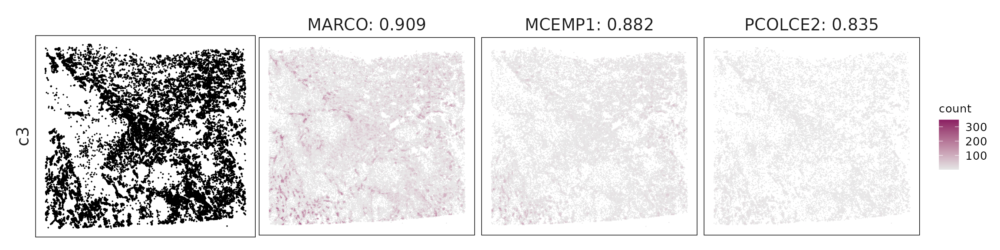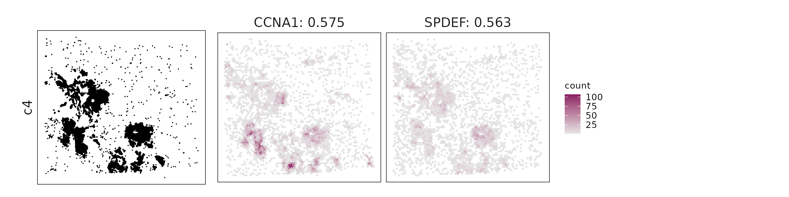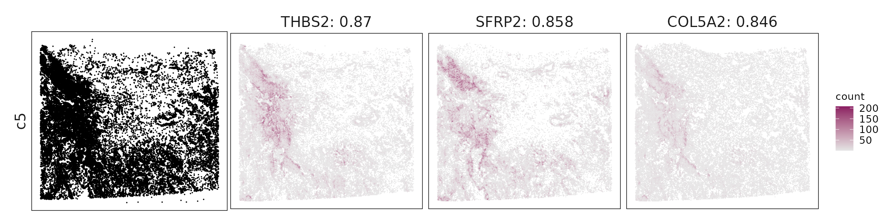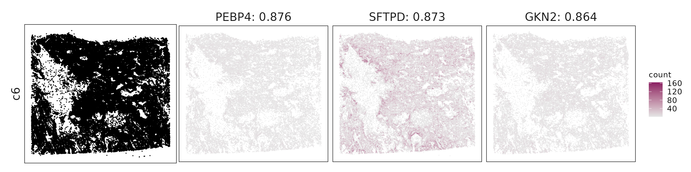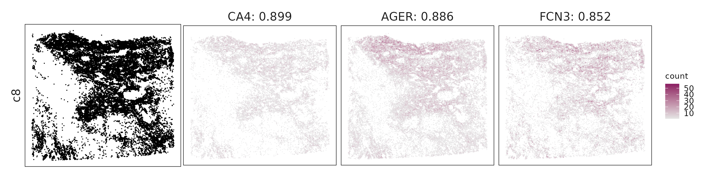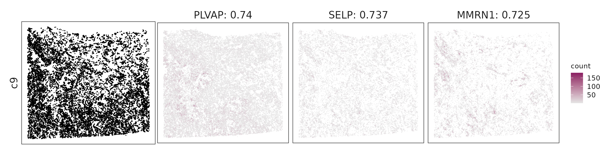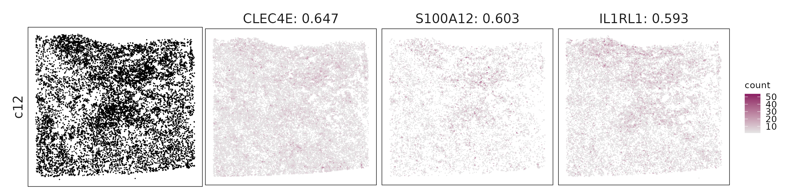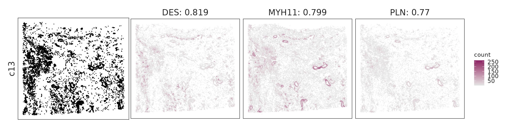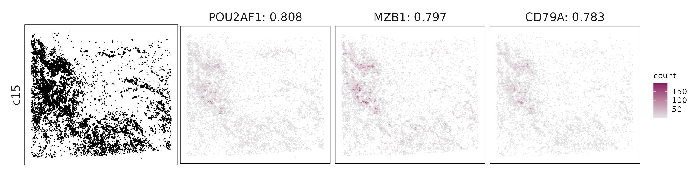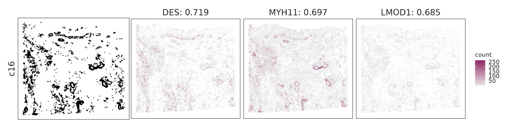
Cluster vector versus marker gene vector
We further examined the quantitative relationship between the cluster vector and its top correlated marker gene vectors. Each scatter plot compares the spatial strength of a marker gene with the corresponding cluster vector across spatial bins. The results show clear positive linear relationships, indicating that the marker genes are spatially aligned with the inferred cluster domain.
plot_lst=list()
for (cl in cluster_names){
#ct_nm = anno_df[anno_df$cluster==cl, "anno_name"]
obs_cutoff = quantile(obs_corr[, cl], 0.75)
perm_cl<-intersect(row.names(perm_res[perm_res[,cl]<0.05,]),
row.names(obs_corr[obs_corr[, cl]>obs_cutoff,]))
inters<-perm_cl
if (length(inters) >0){
rounded_val<-signif(as.numeric(obs_corr[inters,cl]), digits = 3)
inters_df = as.data.frame(cbind(gene=inters, value=rounded_val))
inters_df$value = as.numeric(inters_df$value)
inters_df<-inters_df[order(inters_df$value, decreasing = TRUE),]
inters_df = inters_df[1:min(3, nrow(inters_df)),]
mk_genes = inters_df$gene
dff = as.data.frame(cbind(sv_lst$cluster_mt[,cl],
sv_lst$gene_mt[,mk_genes]))
colnames(dff) = c("cluster", mk_genes)
dff$vector_id = c(1:nbins)
long_df <- dff %>%
tidyr::pivot_longer(cols = -c(cluster, vector_id), names_to = "gene",
values_to = "vector_count")
long_df$gene = factor(long_df$gene, levels=mk_genes)
p<-ggplot(long_df, aes(x = cluster, y = vector_count, color=gene )) +
geom_point(size=0.01) +
facet_wrap(~gene, scales="free_y", nrow=1) +
labs(x = paste(cl, " cluster vector ", sep=""),
y = "Top3 marker gene vector") +
theme_minimal()+
scale_y_continuous(expand = c(0.01,0.01))+
scale_x_continuous(expand = c(0.01,0.01))+
theme(panel.grid = element_blank(),
legend.position = "none",
strip.text = element_text(size = 12),
axis.line=element_blank(),
axis.text=element_text(size = 10),
axis.ticks=element_line(color="black"),
axis.title.x=element_text(size = 13),
axis.title.y=element_text(size = 10),
panel.border =element_rect(colour = "black",
fill=NA, linewidth=0.5)
)
if (length(mk_genes) == 2) {
p <- (p | plot_spacer()) +
plot_layout(widths = c(2, 1))
} else if (length(mk_genes) == 1) {
p <- (p | plot_spacer() | plot_spacer()) +
plot_layout(widths = c(1, 1, 1))
}
plot_lst[[cl]] = p
}
}
combined_plot <- wrap_plots(plot_lst, ncol = 2)
combined_plot 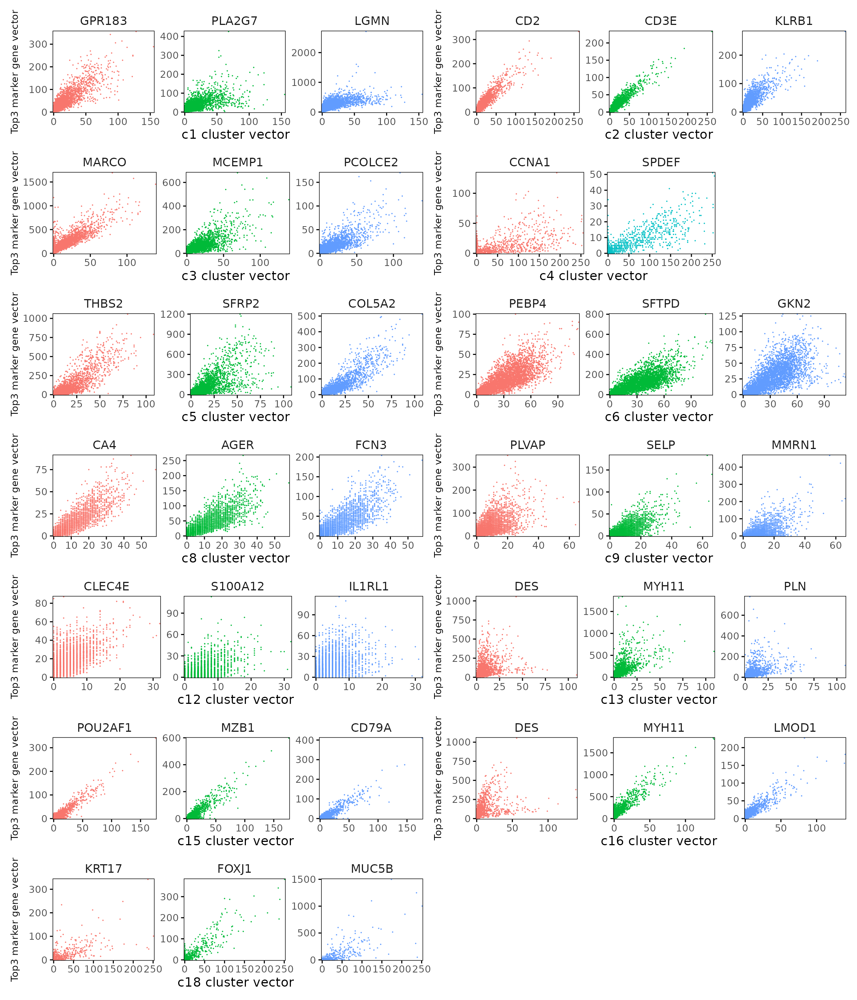
Marker gene summary per cluster
In the correlation-based approach, genes were selected based on two criteria: (1) significant permutation p-values and (2) observed correlation values above the 75th percentile for each cluster. The resulting table lists, for each cluster, the genes with the strongest spatial correlation to that cluster’s distribution, ordered by decreasing correlation coefficient.
It is important to inspect and adjust this cutoff as needed — in some cases, the 75th percentile threshold may still fall below 0.1, which could include weakly correlated genes. A higher cutoff can be applied to ensure that only strongly spatially associated genes are retained.
# correlation appraoch
# Combine into a new dataframe for LaTeX output
output_data <- do.call(rbind, lapply(cluster_names, function(cl) {
obs_cutoff = quantile(obs_corr[, cl], 0.75)
perm_cl=intersect(row.names(perm_res[perm_res[,cl]<0.05,]),
row.names(obs_corr[obs_corr[, cl]>obs_cutoff,]))
if (length(perm_cl) == 0){
return(data.frame(Cluster = cl, Genes = " "))
}
sorted_subset = obs_corr[row.names(obs_corr) %in% perm_cl,]
sorted_subset <- sorted_subset[order(-sorted_subset[,cl]), ]
if (cl != "NoSig"){
gene_list <- paste(row.names(sorted_subset), "(", round(sorted_subset[,cl], 2), ")", sep="", collapse=", ")
}else{
gene_list <- paste(row.names(sorted_subset), "", sep="", collapse=", ")
}
return(data.frame(Cluster = cl, Genes = gene_list))
}))
knitr::kable(
output_data,
caption = "Detected marker genes for each cluster by correlation approach in jazzPanda, in decreasing value of observed correlation"
)| Cluster | Genes |
|---|---|
| c1 | GPR183(0.87), PLA2G7(0.82), LGMN(0.8), CTSK(0.8), SLC1A3(0.78), CD14(0.78), IGSF6(0.78), LILRB4(0.78), CD4(0.78), RARRES1(0.77), AIF1(0.76), CD86(0.75), MPEG1(0.75), CTLA4(0.74), CD28(0.74), MS4A4A(0.74), HIF1A(0.74), ADAM28(0.73), CD2(0.72), THBS2(0.72), HAVCR2(0.72), FCMR(0.72), THY1(0.72), IQGAP2(0.72), CD3E(0.71), GPR34(0.7), CD27(0.7), S100B(0.7), CD163(0.7), GPSM3(0.69), CD3D(0.69), IRF8(0.69), PTGS1(0.68), DCLK1(0.68), SFRP2(0.68), GZMK(0.67), COL5A2(0.67), MYC(0.67), UBD(0.67), CLEC10A(0.67), ALDH1A3(0.67), CHIT1(0.66), GPR171(0.66), IGF1(0.66), HPGDS(0.66), CXCL9(0.66), LCK(0.65), RUNX3(0.64), CD68(0.64) |
| c2 | CD2(0.9), CD3E(0.89), KLRB1(0.88), CD3D(0.86), GZMA(0.86), GPR171(0.84), RUNX3(0.84), LCK(0.83), CD247(0.83), CXCR6(0.82), GZMK(0.82), STAT4(0.82), CTLA4(0.81), CD8A(0.8), FCMR(0.79), IL7R(0.78), KLRD1(0.78), CD28(0.76), SAMD3(0.75), GPSM3(0.74), GPR183(0.73), GZMB(0.72), CD4(0.72), MPEG1(0.7), CXCL9(0.7), CD27(0.69), UBD(0.69), CD40LG(0.69), CD14(0.68), IQGAP2(0.68), IRF8(0.67), CD38(0.67), CD40(0.67), AIF1(0.67), RARRES1(0.67), SELL(0.66), FOXP3(0.65), CCR7(0.65), LILRB4(0.65), SLC1A3(0.64), PLA2G7(0.64), HAVCR2(0.64), CXCL13(0.62), CLEC10A(0.62), CD163(0.62), CD8B(0.62), MS4A4A(0.62), LILRB2(0.61), CXCL10(0.61), TGM2(0.61), KLRC1(0.6) |
| c3 | MARCO(0.91), MCEMP1(0.88), PCOLCE2(0.83), VSIG4(0.81), AQP9(0.79), ALOX5(0.78), RBP4(0.77), CD68(0.72), CLEC12A(0.71), GLIPR2(0.69), FCGR3A(0.68), CXCL5(0.68), CD163(0.67), ANPEP(0.67), RETN(0.67), FCGR1A(0.66), TREM2(0.66), FABP3(0.65), CD83(0.63), GKN2(0.61), MS4A4A(0.6), ITGAM(0.59), CSTA(0.59), SCD(0.57), SFTPD(0.55), AGER(0.55), ACE(0.54), PEBP4(0.53), PLA2G4F(0.53), DMBT1(0.53), AKR1C1(0.49), DUOX1(0.47), FCN3(0.46), CA4(0.46), UPK3B(0.43), SLC15A2(0.42), HP(0.41), RND1(0.41), TMEM100(0.41), KCNK3(0.4), ODAM(0.35), CLDN5(0.34), FGFR4(0.34), HIGD1B(0.33) |
| c4 | CCNA1(0.57), SPDEF(0.56) |
| c5 | THBS2(0.87), SFRP2(0.86), COL5A2(0.85), CTSK(0.84), THY1(0.82), IGF1(0.79), MEDAG(0.77), DCLK1(0.76), ALDH1A3(0.76), HIF1A(0.75), FBN1(0.74), PAMR1(0.73), FKBP11(0.72), RARRES1(0.72), TMEM45A(0.69), PIM2(0.69), MYC(0.68), PLA2G2A(0.67), APOD(0.67), MZB1(0.66), POU2AF1(0.66), CD27(0.65), CD79A(0.64), NID1(0.62), PLN(0.62), PDPN(0.62), PDGFRB(0.61), LTBP2(0.61), TNFRSF17(0.6), CNN1(0.6), PROX1(0.56), MMRN1(0.55), MS4A2(0.54), PDGFRA(0.53), DES(0.53) |
| c6 | PEBP4(0.88), SFTPD(0.87), GKN2(0.86), PLA2G4F(0.85), AGER(0.82), DUOX1(0.82), DMBT1(0.82), C16orf89(0.77), AK1(0.74), TMPRSS2(0.74), KCNK3(0.74), SLC15A2(0.73), CFTR(0.71), CA4(0.71), FCN3(0.71), FAM184A(0.71), FGFR4(0.71), UPK3B(0.69), SFTA3(0.69), TMEM100(0.68), EPHX1(0.68), DAPK2(0.66), MALL(0.65), LAMC3(0.63), CLDN5(0.63), SFTA2(0.62), HP(0.62), FASN(0.61), AGR3(0.61), RND1(0.61), HIGD1B(0.61), AKR1C1(0.61), RAMP2(0.61), CD34(0.6), IL1RL1(0.58), MCEMP1(0.58), ACE(0.58), SHANK3(0.58), NDRG2(0.58), MARCO(0.56), GNG11(0.56), WFS1(0.55), PRG4(0.55), STC1(0.55), ECSCR(0.55), SVEP1(0.53), SCEL(0.53), SLIT3(0.53), ODAM(0.52), HMGCS1(0.52), VWF(0.51), LTF(0.51), PCOLCE2(0.5), IDO1(0.5), LYVE1(0.49), CLEC4E(0.48), AQP9(0.48), RGS5(0.47), RBP4(0.46), FGFBP2(0.45), S100A12(0.42), DGKG(0.41) |
| c8 | CA4(0.9), AGER(0.89), FCN3(0.85), TMEM100(0.84), UPK3B(0.8), GKN2(0.78), PEBP4(0.73), KCNK3(0.73), CLDN5(0.72), RAMP2(0.71), FGFR4(0.7), PLA2G4F(0.7), SFTPD(0.64), DMBT1(0.64), SLC15A2(0.63), STC1(0.6), ACE(0.6), IL1RL1(0.59), SHANK3(0.59), DUOX1(0.59), GNG11(0.59), HIGD1B(0.58), NDRG2(0.58), AK1(0.58), LAMC3(0.58), CD34(0.56), ECSCR(0.56), DAPK2(0.55), MCEMP1(0.54), IDO1(0.53), WFS1(0.53), TMPRSS2(0.53), FGFBP2(0.5), SCEL(0.49), CFTR(0.48), SFTA2(0.48), HP(0.48), SVEP1(0.47), MARCO(0.47), LYVE1(0.47), VWF(0.47), C16orf89(0.46), CLEC4E(0.45), RND1(0.45), ODAM(0.44), S100A12(0.42), PRG4(0.42), SLIT3(0.41), NTRK2(0.38), PCOLCE2(0.38), KLK11(0.37), RETN(0.36), LGR5(0.34), DGKG(0.33), FAM3D(0.32), KRT13(0.26) |
| c9 | PLVAP(0.74), SELP(0.74), MMRN1(0.73), ACKR1(0.67), ADGRL4(0.66), VWF(0.66), ADAMTS1(0.64), NID1(0.61), THY1(0.61), TM4SF18(0.61), FBN1(0.6), THBS2(0.6), CTSK(0.59), TGM2(0.59), COL5A2(0.59), IGF1(0.59), RGS5(0.59), SFRP2(0.58), PDGFRB(0.58), PLA2G2A(0.57), APOLD1(0.57), PLN(0.55), ECSCR(0.55), DES(0.54), MEDAG(0.54), MYH11(0.53), GJA5(0.53), CNN1(0.53), MZB1(0.52), LYVE1(0.52), APOD(0.51), SLIT3(0.51), PAMR1(0.5), PROX1(0.5), POU2AF1(0.49), CD79A(0.49), SHANK3(0.48), LMOD1(0.48), CD34(0.48), FST(0.47), PDGFRA(0.46) |
| c12 | CLEC4E(0.65), S100A12(0.6), IL1RL1(0.59), NDRG2(0.59), TMEM100(0.59), SHANK3(0.57), AGER(0.57), RAMP2(0.57), FCN1(0.56), ECSCR(0.56), CLDN5(0.56), KCNK3(0.56), GKN2(0.55), CD34(0.55), VWF(0.54), FCN3(0.54), GNG11(0.54), CA4(0.53), FGFR4(0.53), PEBP4(0.52), SLC15A2(0.52), UPK3B(0.5), PLA2G4F(0.5), LYVE1(0.49), SFTPD(0.49), DMBT1(0.49), IDO1(0.48), WFS1(0.48), AK1(0.48), ACE(0.47), ADGRL4(0.47), SLIT3(0.47), STC1(0.47), FCER1A(0.47), CD1C(0.46), PRG4(0.46), LAMC3(0.46), DUOX1(0.45), DAPK2(0.45), SVEP1(0.45), DGKG(0.44), FGFBP2(0.44), HIGD1B(0.43), RGS5(0.41), C16orf89(0.41), NTRK2(0.41), SELP(0.41), LILRA5(0.4), HP(0.39), ADAMTS1(0.39), LTF(0.39), MCEMP1(0.37), RND1(0.37), GJA5(0.36) |
| c13 | DES(0.82), MYH11(0.8), PLN(0.77), CNN1(0.75), LMOD1(0.74), ADAMTS1(0.61), FST(0.57), LGR6(0.55), NID1(0.53), FBN1(0.52), PDGFRB(0.52), APOD(0.49), DGKG(0.47), CSPG4(0.46), MMRN1(0.44), SELP(0.42), NTRK2(0.41), GJA5(0.39), SLIT3(0.35), DIRAS3(0.32), RERGL(0.32), BMX(0.29), ACKR1(0.28) |
| c15 | POU2AF1(0.81), MZB1(0.8), CD79A(0.78), PIM2(0.76), TNFRSF17(0.71), FKBP11(0.71), CD27(0.69), SFRP2(0.68), CTSK(0.68), THBS2(0.68), SEC11C(0.67), IGF1(0.66), THY1(0.64), DCLK1(0.64), ADAM28(0.64), COL5A2(0.64), ALDH1A3(0.64), RARRES1(0.62), TMEM45A(0.61), MEDAG(0.6), APOD(0.59), TNFRSF13C(0.59), PAMR1(0.58), FBN1(0.58), CD19(0.56), PLA2G2A(0.55), PDPN(0.51), NID1(0.51), PROX1(0.5), LTBP2(0.5), PLN(0.5) |
| c16 | DES(0.72), MYH11(0.7), LMOD1(0.69), PLN(0.68), CNN1(0.66), LGR6(0.57), ADAMTS1(0.55), FST(0.46), CSPG4(0.41), NTRK2(0.41), DGKG(0.41), MMRN1(0.34), RERGL(0.32), SELP(0.31), SLIT3(0.28), BMX(0.26) |
| c18 | KRT17(0.49), FOXJ1(0.47), MUC5B(0.44), SOX2(0.44), KRT5(0.44), CCDC78(0.43), KRT15(0.42), BCAS1(0.42), GPX2(0.4), CYP2F1(0.38), TP63(0.36), KLK11(0.31), LGR5(0.26), FAM3D(0.26) |
limma
We applied the limma framework to identify differentially expressed marker genes across clusters in the healthy liver sample. Count data were normalized using log-transformed counts from the speckle package. A linear model was fitted for each gene with cluster identity as the design factor, and pairwise contrasts were constructed to compare each cluster against all others. Empirical Bayes moderation was applied to stabilize variance estimates, and significant genes were determined using the moderated t-statistics from eBayes.
y <- DGEList(hl_cancer$cm[,setdiff(colnames(hl_cancer$cm),
c(hl_cancer$zero_cells,"cate"))])
y$genes <-row.names(hl_cancer$cm)
logcounts <- speckle::normCounts(y,log=TRUE,prior.count=0.1)
maxclust <- length(unique(cluster_info$cluster))
grp <- cluster_info$cluster
design <- model.matrix(~0+grp)
colnames(design) <- levels(grp)
mycont <- matrix(NA,ncol=length(levels(grp)),nrow=length(levels(grp)))
rownames(mycont)<-colnames(mycont)<-levels(grp)
diag(mycont)<-1
mycont[upper.tri(mycont)]<- -1/(length(levels(factor(grp)))-1)
mycont[lower.tri(mycont)]<- -1/(length(levels(factor(grp)))-1)
fit <- lmFit(logcounts,design)
fit.cont <- contrasts.fit(fit,contrasts=mycont)
fit.cont <- eBayes(fit.cont,trend=TRUE,robust=TRUE)
#treat_res <- treat(fit.cont,lfc=0.5)
limma_dt<-decideTests(fit.cont)
saveRDS(fit.cont, here(gdata,paste0(data_nm, "_fit_cont_obj.Rds")))fit.cont = readRDS(here(gdata,paste0(data_nm, "_fit_cont_obj.Rds")))
limma_dt <- decideTests(fit.cont)
summary(limma_dt) c1 c12 c13 c15 c16 c18 c2 c3 c4 c5 c6 c8 c9
Down 268 265 312 255 323 241 277 301 244 271 253 248 267
NotSig 16 32 18 29 12 21 21 8 5 25 14 15 28
Up 108 95 62 108 57 130 94 83 143 96 125 129 97top_markers <- lapply(cluster_names, function(cl) {
tt <- topTable(fit.cont,
coef = cl,
number = Inf,
adjust.method = "BH",
sort.by = "P")
tt <- tt[order(tt$adj.P.Val, -abs(tt$logFC)), ]
tt$contrast <- cl
tt$gene <- rownames(tt)
head(tt, 5)
})
# Combine into one data.frame
top_markers_df <- bind_rows(top_markers) %>%
select(contrast, gene, logFC, adj.P.Val)
p1<- DotPlot(seu, features = unique(top_markers_df$gene)) +
scale_colour_gradient(low = "white", high = "red") +
coord_flip()+
theme(axis.text.x = element_text(angle = 45, hjust = 1, vjust = 1))+
labs(title = "Top 5 marker genes (limma)", x="", y="")
p1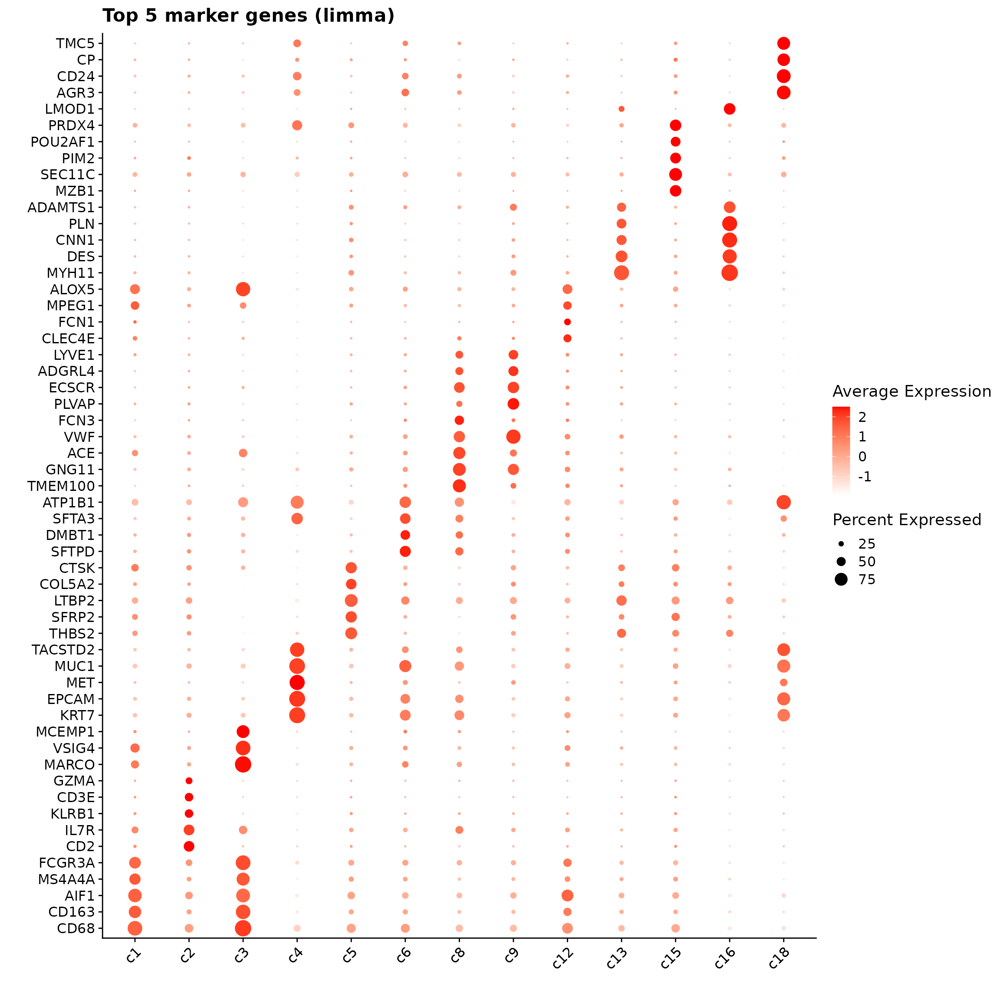
Wilcoxon Rank Sum Test
The FindAllMarkers function applies a Wilcoxon Rank Sum
test to detect genes with cluster-specific expression shifts. Only
positive markers (upregulated genes) were retained using a log
fold-change threshold of 0.1.
Idents(hlc_seu) = cluster_info[match(colnames(hlc_seu),
row.names(cluster_info)),"cluster"]
seu_markers <- FindAllMarkers(hlc_seu, only.pos = TRUE,logfc.threshold = 0.1)
table(seu_markers$cluster)
saveRDS(seu_markers, here(gdata,paste0(data_nm, "_seu_markers.Rds")))FM_result= readRDS(here(gdata,paste0(data_nm, "_seu_markers.Rds")))
FM_result = FM_result[FM_result$avg_log2FC>0.1, ]
table(FM_result$cluster)
c1 c12 c13 c15 c16 c18 c2 c3 c4 c5 c6 c8 c9
88 90 66 80 52 108 92 69 104 82 104 97 77 FM_result$cluster <- factor(FM_result$cluster,
levels = cluster_names)
top_mg <- FM_result %>%
group_by(cluster) %>%
arrange(desc(avg_log2FC), .by_group = TRUE) %>%
slice_max(order_by = avg_log2FC, n = 5) %>%
select(cluster, gene, avg_log2FC)
p1<-DotPlot(seu, features = unique(top_mg$gene)) +
scale_colour_gradient(low = "white", high = "red") +
coord_flip()+
theme(axis.text.x = element_text(angle = 45, hjust = 1, vjust = 1))+
labs(title = "Top 5 marker genes (WRS)", x="", y="")
p1
# top_mg <- FM_result %>%
# group_by(cluster) %>%
# arrange(desc(avg_log2FC), .by_group = TRUE) %>%
# slice_max(order_by = avg_log2FC, n = 10) %>%
# select(cluster, gene, avg_log2FC)
#
# # Combine into a new dataframe for LaTeX output
# output_data <- do.call(rbind, lapply(cluster_names, function(cl) {
# subset <- top_mg[top_mg$cluster == cl, ]
# sorted_subset <- subset[order(-subset$avg_log2FC), ]
# gene_list <- paste(sorted_subset$gene, "(", round(sorted_subset$avg_log2FC, 2), ")", sep="", collapse=", ")
#
# return(data.frame(Cluster = cl, Genes = gene_list))
# }))
# latex_table <- xtable(output_data, caption="Detected marker genes for each cluster by FindMarkers")
# print.xtable(latex_table, include.rownames = FALSE, hline.after = c(-1, 0, nrow(output_data)), comment = FALSE)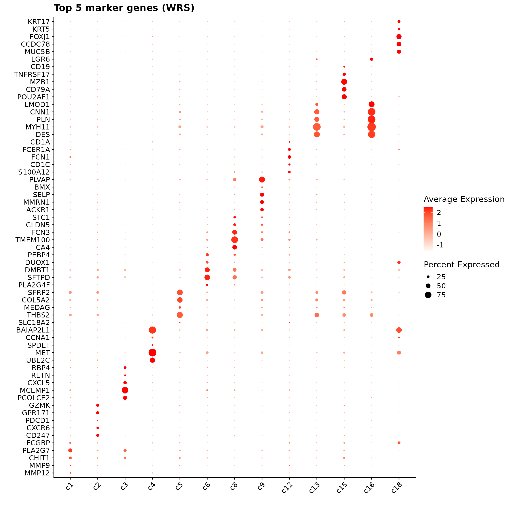
Comparison of marker gene detection methods
Cumulative rank plot
We compared the performance of different marker detection methods—jazzPanda (correlation-based and generalized linear model variants), limma, and Seurat’s Wilcoxon Rank Sum test—by evaluating the cumulative average spatial correlation between ranked marker genes and their corresponding target clusters at the spatial vector level.
For most clusters, both our linear modelling and correlation-based approaches consistently prioritize highly correlated marker genes more effectively than limma or the Wilcoxon rank sum test. This pattern holds across clusters of varying sizes, indicating robust performance of our spatially informed methods.
plot_lst=list()
cor_M = cor(sv_lst$gene_mt,
sv_lst$cluster_mt[, cluster_names],
method = "spearman")
Idents(seu)=cluster_info$cluster[match(colnames(seu),
cluster_info$cell_id)]
for (cl in cluster_names){
fm_cl=FindMarkers(seu, ident.1 = cl, only.pos = TRUE,
logfc.threshold = 0.1)
fm_cl = fm_cl[fm_cl$p_val_adj<0.05, ]
fm_cl = fm_cl[order(fm_cl$avg_log2FC, decreasing = TRUE),]
to_plot_fm =row.names(fm_cl)
if (length(to_plot_fm)>0){
FM_pt =data.frame("name"=to_plot_fm,"rk"= 1:length(to_plot_fm),
"y"= get_cmr_ma(to_plot_fm,cor_M = cor_M, cl = cl),
"type"="Wilcoxon Rank Sum Test")
}else{
FM_pt <- data.frame(name = character(0), rk = integer(0),
y= numeric(0), type = character(0))
}
limma_cl<-topTable(fit.cont,coef=cl,p.value = 0.05, n=Inf, sort.by = "p")
limma_cl = limma_cl[limma_cl$logFC>0, ]
to_plot_lm = row.names(limma_cl)
if (length(to_plot_lm)>0){
limma_pt = data.frame("name"=to_plot_lm,"rk"= 1:length(to_plot_lm),
"y"= get_cmr_ma(to_plot_lm,cor_M = cor_M, cl = cl),
"type"="limma")
}else{
limma_pt <- data.frame(name = character(0), rk = integer(0),
y= numeric(0), type = character(0))
}
obs_cutoff = quantile(obs_corr[, cl], 0.75)
perm_cl=intersect(row.names(perm_res[perm_res[,cl]<0.05,]),
row.names(obs_corr[obs_corr[, cl]>obs_cutoff,]))
if (length(perm_cl) > 0) {
rounded_val=signif(as.numeric(obs_corr[perm_cl,cl]), digits = 3)
roudned_pval=signif(as.numeric(perm_res[perm_cl,cl]), digits = 3)
perm_sorted = as.data.frame(cbind(gene=perm_cl, value=rounded_val, pval=roudned_pval))
perm_sorted$value = as.numeric(perm_sorted$value)
perm_sorted$pval = as.numeric(perm_sorted$pval)
perm_sorted=perm_sorted[order(-perm_sorted$pval,
perm_sorted$value,
decreasing = TRUE),]
corr_pt = data.frame("name"=perm_sorted$gene,"rk"= 1:length(perm_sorted$gene),
"y"= get_cmr_ma(perm_sorted$gene,cor_M = cor_M, cl = cl),
"type"="jazzPanda-correlation")
} else {
corr_pt <-data.frame(name = character(0), rk = integer(0),
y= numeric(0), type = character(0))
}
lasso_sig = jazzPanda_res[jazzPanda_res$top_cluster==cl,]
if (nrow(lasso_sig) > 0) {
lasso_sig <- lasso_sig[order(lasso_sig$glm_coef, decreasing = TRUE), ]
lasso_pt = data.frame("name"=lasso_sig$gene,"rk"= 1:nrow(lasso_sig),
"y"= get_cmr_ma(lasso_sig$gene,cor_M = cor_M, cl = cl),
"type"="jazzPanda-glm")
} else {
lasso_pt <- data.frame(name = character(0), rk = integer(0),
y= numeric(0), type = character(0))
}
data_lst = rbind(limma_pt, FM_pt,corr_pt,lasso_pt)
data_lst$type <- factor(data_lst$type,
levels = c("jazzPanda-correlation" ,
"jazzPanda-glm",
"limma", "Wilcoxon Rank Sum Test"))
data_lst$rk = as.numeric(data_lst$rk)
p <-ggplot(data_lst, aes(x = rk, y = y, color = type)) +
geom_step(size = 0.8) + # type = "s"
scale_color_manual(values = c("jazzPanda-correlation" = "orange",
"jazzPanda-glm" = "red",
"limma" = "black",
"Wilcoxon Rank Sum Test" = "blue")) +
scale_x_continuous(limits = c(0, 50))+
labs(title = paste0("Cluster ", cl), x = "Rank of marker genes",
y = "Cumulative average correlation",
color = NULL) +
theme_classic(base_size = 12) +
theme(plot.title = element_text(hjust = 0.5),
axis.line = element_blank(),
panel.border = element_rect(color = "black",
fill = NA, linewidth = 1),
legend.position = "inside",
legend.position.inside = c(0.98, 0.02),
legend.justification = c("right", "bottom"),
legend.background = element_rect(color = "black",
fill = "white", linewidth = 0.5),
legend.box.background = element_rect(color = "black",
linewidth = 0.5)
)
plot_lst[[cl]] <- p
}
combined_plot <- wrap_plots(plot_lst, ncol =3)
combined_plot 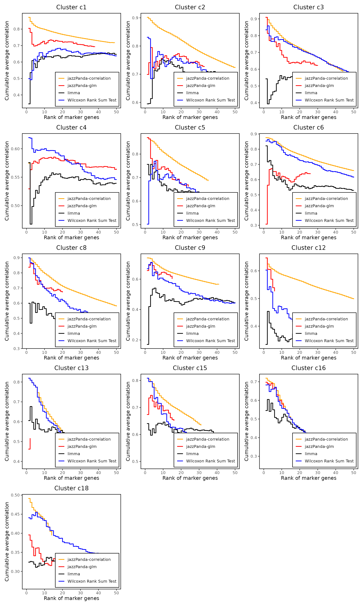
Upset plot
We further visualized the overlap between marker genes detected by the four methods using UpSet plots for each cluster. Non-spatial methods like limma and Wilcoxon identify many marker genes, but most lack clear spatial specificity. In contrast, our method prioritizes spatial coherence, producing a more focused set of markers with some overlap with non-spatial results.
plot_lst=list()
for (cl in cluster_names){
#ct_nm = anno_df[anno_df$cluster==cl, "anno_name"]
findM_sig <- FM_result[FM_result$cluster==cl & FM_result$p_val_adj<0.05,"gene"]
limma_sig <- row.names(limma_dt[limma_dt[,cl]==1,])
lasso_cl <- jazzPanda_res[jazzPanda_res$top_cluster==cl, "gene"]
obs_cutoff = quantile(obs_corr[, cl], 0.75)
perm_cl<-intersect(row.names(perm_res[perm_res[,cl]<0.05,]),
row.names(obs_corr[obs_corr[, cl]>obs_cutoff,]))
df_mt <- as.data.frame(matrix(FALSE,nrow=nrow(jazzPanda_res),ncol=4))
row.names(df_mt) <- jazzPanda_res$gene
colnames(df_mt) <- c("jazzPanda-glm",
"jazzPanda-correlation",
"Wilcoxon Rank Sum Test","limma")
df_mt[findM_sig,"Wilcoxon Rank Sum Test"] <- TRUE
df_mt[limma_sig,"limma"] <- TRUE
df_mt[lasso_cl,"jazzPanda-glm"] <- TRUE
df_mt[perm_cl,"jazzPanda-correlation"] <- TRUE
df_mt$gene_name <- row.names(df_mt)
p = upset(df_mt,
intersect=c("Wilcoxon Rank Sum Test", "limma",
"jazzPanda-correlation","jazzPanda-glm"),
wrap=TRUE, keep_empty_groups= FALSE, name="",
stripes='white',
sort_intersections_by ="cardinality", sort_sets= FALSE,min_degree=1,
set_sizes =(
upset_set_size()
+ theme(axis.title= element_blank(),
axis.ticks.y = element_blank(),
axis.text.y = element_blank())),
sort_intersections= "descending", warn_when_converting=FALSE,
warn_when_dropping_groups=TRUE,encode_sets=TRUE,
width_ratio=0.3, height_ratio=1/4)+
ggtitle(paste0("Cluster ", cl))+
theme(plot.title = element_text( size=15))
plot_lst[[cl]] <- p
}
combined_plot <- wrap_plots(plot_lst, ncol =3)
combined_plot 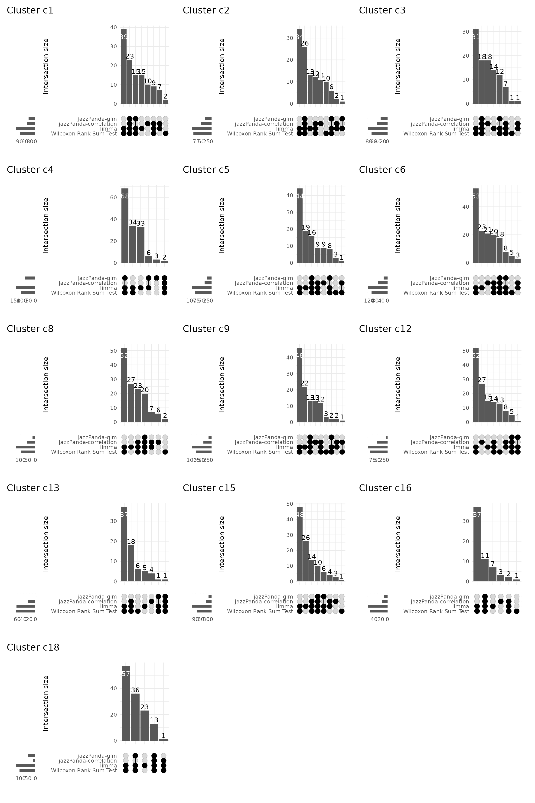
Annotate cell type with top marker genes
anno_df <- data.frame(
cluster = c("c1","c2","c3","c4","c5","c6","c8","c9","c12","c13","c15","c16","c18"),
major_class = c(
"Myeloid","Lymphoid","Myeloid","Epithelial (tumor)","Stromal","Epithelial",
"Vascular","Vascular","Myeloid","Stromal","Lymphoid","Stromal","Epithelial"
),
sub_class = c(
"Macrophage/monocyte","T cell","Macrophage","Carcinoma (luminal-like)","Fibroblast","Airway secretory",
"Endothelium (capillary/arterial)","Endothelium (venous/activated)","Dendritic/monocyte","Vascular mural cell","B lineage","Vascular smooth muscle","Airway basal–ciliated transitional"
),
cell_type = c(
"IFN-activated TAM (CXCL9/10+, MMP-high)",
"Exhausted/activated T (CXCR6+ PD-1+ GZMK+)",
"MARCO+ alveolar/TAM (immunoreg.)",
"Proliferating EGFR/MET+ tumor epi",
"SFRP2/THBS2+ matrix CAF",
"Club/serous secretory (SFTPD+ CFTR+)",
"Capillary/arterial EC (TMEM100+ CLDN5+)",
"Venous/activated EC (VWF+ ACKR1+ PLVAP+)",
"cDC2 / inflammatory monocyte mix",
"Pericyte-leaning mural cell",
"Plasma cell (MZB1+ BCMA+)",
"Contractile SMC",
"Basal/ciliated transitional (KRT5/TP63 & FOXJ1/TP73)"
),
anno_name = c("Inflammatory TAM",
"Activated T cell",
"Alveolar macrophage",
"Tumor epithelial",
"Myofibroblast CAF",
"Secretory epithelial",
"Capillary endothelium",
"Venous/HEV endothelium",
"cDC2 / Mono-DC",
"Vascular mural cell",
"Plasma cell",
"Vascular SMC / Pericyte",
"Basal–ciliated epithelium"),
supporting_genes = c(
"CXCL9,CXCL10,IRF8,FCGR1A,CD86,CD14,MMP9,MMP12,CHIT1,LGMN",
"PDCD1,CTLA4,CXCR6,GZMK,CD3D/E,CD8A,KLRB1,CXCL13",
"MARCO,VSIG4,CD68,CD163,FCGR3A,TREM2,ALOX5",
"EPCAM,KRT7,MUC1,TACSTD2,EGFR,MET,SEC61G,UBE2C,CCNB2,MKI67,TOP2A",
"SFRP2,THBS2,COL5A2,COL8A1,FBN1,PDGFRA,PDGFRB,THY1,IGF1,LTBP2",
"SFTPD,SFTA3,DMBT1,CFTR,TMPRSS2,DUOX1,GKN2",
"TMEM100,CLDN5,RAMP2,ADGRL4,KDR,ACE,GNG11",
"VWF,ACKR1,MMRN1,PLVAP,SELP,ADGRL4,APOLD1",
"CD1C,FCER1A,S100A12,FCN1,CLEC4E,CD300E",
"PDGFRB,CSPG4,TGM2,FST,DES,CNN1",
"MZB1,POU2AF1,CD79A,TNFRSF17,CD19,MS4A1,CD27,CD38",
"MYH11,CNN1,LMOD1,DES,PLN,RERGL",
"MUC5B,FOXJ1,TP73,SOX2,KRT5,KRT15,KRT17,GPX2,CYP2F1"
),
notes = c(
"Concordant IFN/inflammatory TAM; minor DC signal likely contamination.",
"Mix of exhausted CD8 (PD-1+, CXCR6+, GZMK+) and Tfh-like (CXCL13+); minimal Treg.",
"Alveolar/TAM program with immunoregulatory markers; robust across methods.",
"Strong epithelial tumor with proliferation and EGFR/MET activity.",
"Canonical matrix-remodeling CAF; KIT/WT1 likely noise/doublets.",
"Secretory/club phenotype; not classic AT2 (SFTPC absent).",
"Endothelial identity dominant; AGER/CA4 likely interface/ambient RNA.",
"Activated venous endothelium; some lymphatic markers reflect minor subfraction.",
"cDC2 mixed with inflammatory monocytes; peritumoral APC compartment.",
"Pericyte-skewed mural cells; contrasts with c16 contractile SMC.",
"Mature plasma cell program; very consistent.",
"Definitive contractile SMC signature.",
"Basal–ciliated transitional, typical of injury/repair."
),
confidence = c(
"High","Medium","High","High","High","Medium","Medium","High","Medium","High","High","High","High"
),
stringsAsFactors = FALSE
)
anno_df cluster major_class sub_class
1 c1 Myeloid Macrophage/monocyte
2 c2 Lymphoid T cell
3 c3 Myeloid Macrophage
4 c4 Epithelial (tumor) Carcinoma (luminal-like)
5 c5 Stromal Fibroblast
6 c6 Epithelial Airway secretory
7 c8 Vascular Endothelium (capillary/arterial)
8 c9 Vascular Endothelium (venous/activated)
9 c12 Myeloid Dendritic/monocyte
10 c13 Stromal Vascular mural cell
11 c15 Lymphoid B lineage
12 c16 Stromal Vascular smooth muscle
13 c18 Epithelial Airway basal–ciliated transitional
cell_type
1 IFN-activated TAM (CXCL9/10+, MMP-high)
2 Exhausted/activated T (CXCR6+ PD-1+ GZMK+)
3 MARCO+ alveolar/TAM (immunoreg.)
4 Proliferating EGFR/MET+ tumor epi
5 SFRP2/THBS2+ matrix CAF
6 Club/serous secretory (SFTPD+ CFTR+)
7 Capillary/arterial EC (TMEM100+ CLDN5+)
8 Venous/activated EC (VWF+ ACKR1+ PLVAP+)
9 cDC2 / inflammatory monocyte mix
10 Pericyte-leaning mural cell
11 Plasma cell (MZB1+ BCMA+)
12 Contractile SMC
13 Basal/ciliated transitional (KRT5/TP63 & FOXJ1/TP73)
anno_name
1 Inflammatory TAM
2 Activated T cell
3 Alveolar macrophage
4 Tumor epithelial
5 Myofibroblast CAF
6 Secretory epithelial
7 Capillary endothelium
8 Venous/HEV endothelium
9 cDC2 / Mono-DC
10 Vascular mural cell
11 Plasma cell
12 Vascular SMC / Pericyte
13 Basal–ciliated epithelium
supporting_genes
1 CXCL9,CXCL10,IRF8,FCGR1A,CD86,CD14,MMP9,MMP12,CHIT1,LGMN
2 PDCD1,CTLA4,CXCR6,GZMK,CD3D/E,CD8A,KLRB1,CXCL13
3 MARCO,VSIG4,CD68,CD163,FCGR3A,TREM2,ALOX5
4 EPCAM,KRT7,MUC1,TACSTD2,EGFR,MET,SEC61G,UBE2C,CCNB2,MKI67,TOP2A
5 SFRP2,THBS2,COL5A2,COL8A1,FBN1,PDGFRA,PDGFRB,THY1,IGF1,LTBP2
6 SFTPD,SFTA3,DMBT1,CFTR,TMPRSS2,DUOX1,GKN2
7 TMEM100,CLDN5,RAMP2,ADGRL4,KDR,ACE,GNG11
8 VWF,ACKR1,MMRN1,PLVAP,SELP,ADGRL4,APOLD1
9 CD1C,FCER1A,S100A12,FCN1,CLEC4E,CD300E
10 PDGFRB,CSPG4,TGM2,FST,DES,CNN1
11 MZB1,POU2AF1,CD79A,TNFRSF17,CD19,MS4A1,CD27,CD38
12 MYH11,CNN1,LMOD1,DES,PLN,RERGL
13 MUC5B,FOXJ1,TP73,SOX2,KRT5,KRT15,KRT17,GPX2,CYP2F1
notes
1 Concordant IFN/inflammatory TAM; minor DC signal likely contamination.
2 Mix of exhausted CD8 (PD-1+, CXCR6+, GZMK+) and Tfh-like (CXCL13+); minimal Treg.
3 Alveolar/TAM program with immunoregulatory markers; robust across methods.
4 Strong epithelial tumor with proliferation and EGFR/MET activity.
5 Canonical matrix-remodeling CAF; KIT/WT1 likely noise/doublets.
6 Secretory/club phenotype; not classic AT2 (SFTPC absent).
7 Endothelial identity dominant; AGER/CA4 likely interface/ambient RNA.
8 Activated venous endothelium; some lymphatic markers reflect minor subfraction.
9 cDC2 mixed with inflammatory monocytes; peritumoral APC compartment.
10 Pericyte-skewed mural cells; contrasts with c16 contractile SMC.
11 Mature plasma cell program; very consistent.
12 Definitive contractile SMC signature.
13 Basal–ciliated transitional, typical of injury/repair.
confidence
1 High
2 Medium
3 High
4 High
5 High
6 Medium
7 Medium
8 High
9 Medium
10 High
11 High
12 High
13 HighsessionInfo()R version 4.5.1 (2025-06-13)
Platform: x86_64-pc-linux-gnu
Running under: Red Hat Enterprise Linux 9.3 (Plow)
Matrix products: default
BLAS: /stornext/System/data/software/rhel/9/base/tools/R/4.5.1/lib64/R/lib/libRblas.so
LAPACK: /stornext/System/data/software/rhel/9/base/tools/R/4.5.1/lib64/R/lib/libRlapack.so; LAPACK version 3.12.1
locale:
[1] LC_CTYPE=en_AU.UTF-8 LC_NUMERIC=C
[3] LC_TIME=en_AU.UTF-8 LC_COLLATE=en_AU.UTF-8
[5] LC_MONETARY=en_AU.UTF-8 LC_MESSAGES=en_AU.UTF-8
[7] LC_PAPER=en_AU.UTF-8 LC_NAME=C
[9] LC_ADDRESS=C LC_TELEPHONE=C
[11] LC_MEASUREMENT=en_AU.UTF-8 LC_IDENTIFICATION=C
time zone: Australia/Melbourne
tzcode source: system (glibc)
attached base packages:
[1] stats4 stats graphics grDevices utils datasets methods
[8] base
other attached packages:
[1] dotenv_1.0.3 corrplot_0.95
[3] xtable_1.8-4 here_1.0.1
[5] limma_3.64.1 RColorBrewer_1.1-3
[7] patchwork_1.3.1 gridExtra_2.3
[9] ggrepel_0.9.6 ComplexUpset_1.3.3
[11] caret_7.0-1 lattice_0.22-7
[13] glmnet_4.1-10 Matrix_1.7-3
[15] tidyr_1.3.1 dplyr_1.1.4
[17] data.table_1.17.8 ggplot2_3.5.2
[19] Seurat_5.3.0 SeuratObject_5.1.0
[21] sp_2.2-0 SpatialExperiment_1.18.1
[23] SingleCellExperiment_1.30.1 SummarizedExperiment_1.38.1
[25] Biobase_2.68.0 GenomicRanges_1.60.0
[27] GenomeInfoDb_1.44.2 IRanges_2.42.0
[29] S4Vectors_0.46.0 BiocGenerics_0.54.0
[31] generics_0.1.4 MatrixGenerics_1.20.0
[33] matrixStats_1.5.0 jazzPanda_0.2.4
loaded via a namespace (and not attached):
[1] RcppAnnoy_0.0.22 splines_4.5.1 later_1.4.2
[4] R.oo_1.27.1 tibble_3.3.0 polyclip_1.10-7
[7] hardhat_1.4.2 pROC_1.19.0.1 rpart_4.1.24
[10] fastDummies_1.7.5 lifecycle_1.0.4 rprojroot_2.1.0
[13] globals_0.18.0 MASS_7.3-65 magrittr_2.0.3
[16] plotly_4.11.0 sass_0.4.10 rmarkdown_2.29
[19] jquerylib_0.1.4 yaml_2.3.10 httpuv_1.6.16
[22] sctransform_0.4.2 spam_2.11-1 spatstat.sparse_3.1-0
[25] reticulate_1.43.0 cowplot_1.2.0 pbapply_1.7-4
[28] lubridate_1.9.4 abind_1.4-8 Rtsne_0.17
[31] presto_1.0.0 R.utils_2.13.0 purrr_1.1.0
[34] BumpyMatrix_1.16.0 nnet_7.3-20 ipred_0.9-15
[37] lava_1.8.1 GenomeInfoDbData_1.2.14 irlba_2.3.5.1
[40] listenv_0.9.1 spatstat.utils_3.1-5 goftest_1.2-3
[43] RSpectra_0.16-2 spatstat.random_3.4-1 fitdistrplus_1.2-4
[46] parallelly_1.45.1 codetools_0.2-20 DelayedArray_0.34.1
[49] tidyselect_1.2.1 shape_1.4.6.1 UCSC.utils_1.4.0
[52] farver_2.1.2 spatstat.explore_3.5-2 jsonlite_2.0.0
[55] progressr_0.15.1 ggridges_0.5.6 survival_3.8-3
[58] iterators_1.0.14 systemfonts_1.3.1 foreach_1.5.2
[61] tools_4.5.1 ragg_1.5.0 ica_1.0-3
[64] Rcpp_1.1.0 glue_1.8.0 prodlim_2025.04.28
[67] SparseArray_1.8.1 xfun_0.52 withr_3.0.2
[70] fastmap_1.2.0 digest_0.6.37 timechange_0.3.0
[73] R6_2.6.1 mime_0.13 textshaping_1.0.1
[76] colorspace_2.1-1 scattermore_1.2 tensor_1.5.1
[79] spatstat.data_3.1-8 R.methodsS3_1.8.2 hexbin_1.28.5
[82] recipes_1.3.1 class_7.3-23 httr_1.4.7
[85] htmlwidgets_1.6.4 S4Arrays_1.8.1 uwot_0.2.3
[88] ModelMetrics_1.2.2.2 pkgconfig_2.0.3 gtable_0.3.6
[91] timeDate_4041.110 lmtest_0.9-40 XVector_0.48.0
[94] htmltools_0.5.8.1 dotCall64_1.2 scales_1.4.0
[97] png_0.1-8 gower_1.0.2 spatstat.univar_3.1-4
[100] knitr_1.50 reshape2_1.4.4 rjson_0.2.23
[103] nlme_3.1-168 cachem_1.1.0 zoo_1.8-14
[106] stringr_1.5.1 KernSmooth_2.23-26 parallel_4.5.1
[109] miniUI_0.1.2 pillar_1.11.0 grid_4.5.1
[112] vctrs_0.6.5 RANN_2.6.2 promises_1.3.3
[115] cluster_2.1.8.1 evaluate_1.0.4 magick_2.8.7
[118] cli_3.6.5 compiler_4.5.1 rlang_1.1.6
[121] crayon_1.5.3 future.apply_1.20.0 labeling_0.4.3
[124] plyr_1.8.9 stringi_1.8.7 viridisLite_0.4.2
[127] deldir_2.0-4 BiocParallel_1.42.1 lazyeval_0.2.2
[130] spatstat.geom_3.5-0 RcppHNSW_0.6.0 bit64_4.6.0-1
[133] future_1.67.0 statmod_1.5.0 shiny_1.11.1
[136] ROCR_1.0-11 igraph_2.1.4 bslib_0.9.0
[139] bit_4.6.0